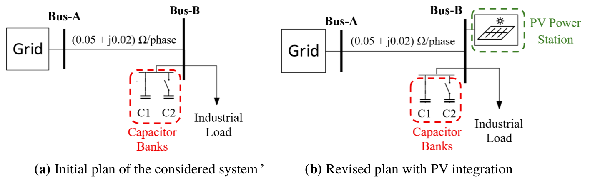
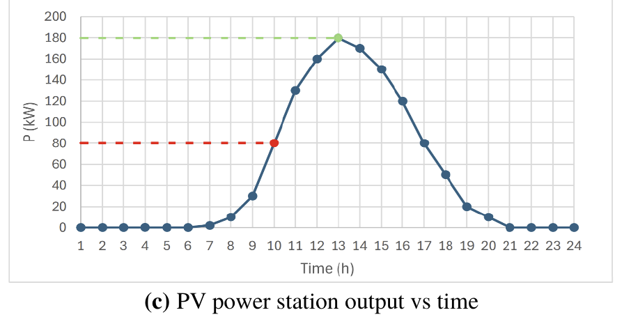
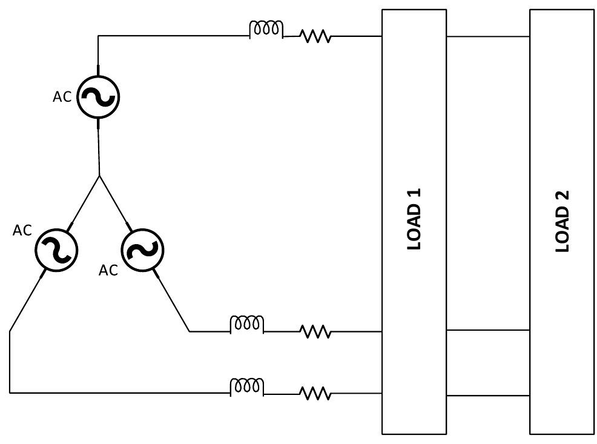

METU EEE · EE361 Electromechanical Energy Conversion I
Chapter I: Introduction to Power Systems
The complete first chapter of EE361, taught as a course: thirteen lessons in the order of the 2026 syllabus, followed by every Chapter I exam question in the course archive, shown exactly as printed and solved step by step.
How each lesson works
Learning goals at the top tell you what you should be able to do at the end.
Explanation and derivations. Every formula is derived, not just stated. Longer derivations are in expandable boxes.
Explore boxes are interactive diagrams. Predict what will happen, then move the slider and check.
Worked examples open one step at a time. Try the next step yourself before you reveal it.
Check yourself questions give instant feedback. Several are the real Quiz 1 questions.
Press Mark as learned at the bottom when you are done. Your progress stays in your browser.
Syllabus map
Chapter I in the 2026 syllabus has three blocks: DC systems (power and energy), single-phase AC (RMS, phasors, complex power, power factor correction, electrical safety) and three-phase AC (balanced systems, Y and Δ, power calculations, the per-phase equivalent, line model and regulation, and power factor correction). The lessons follow that list one to one.
Conventions used on every page
Convention
Meaning
RMS everywhere
All AC voltages and currents, phasor lengths included, are RMS unless a question says peak or amplitude.
"400 V three-phase"
400 V RMS line-to-line. The phase (line-to-neutral) voltage is 230.9 V.
Load sign convention
Current enters the + terminal of a load. P > 0 means absorbed. Inductive (lagging) loads absorb Q > 0; capacitive (leading) loads have Q < 0.
Generator convention
For a source we usually quote power delivered. A generator at leading PF absorbs reactive power.
Phase sequence
Positive (abc) unless stated: \(V_b\) lags \(V_a\) by 120°.
Frequency
50 Hz (Turkey, Europe) unless a question says otherwise. Sen's textbook examples use 60 Hz.
Sources: EE361 syllabus 2026 v5 (Chapter I outline); Keysan, LN1 "Introduction" and LN2 "3-Phase Power" slides; P. C. Sen, Principles of Electric Machines and Power Electronics, 3rd ed., Appendix B (pp.589–604); EE361 Chapter-1 Glossary; EE361 Electrical Safety Manual; Chapter-1 problems and solutions v2; 2026 Quiz 1 key; 2021, 2022 and 2025 Midterm 1.
Introduction to power engineering · Lesson 1
Power systems and electromechanical energy conversion
What this course is about, what an electric power system looks like from the power plant to your socket, and the physical reason the whole world ended up with high-voltage AC grids.
After this lesson you can
Name the energy conversions EE361 studies and the devices that perform them.
Describe generation, transmission and distribution, with typical Turkish voltage levels.
Prove with \(P_{\text{loss}} = P^2R/V^2\) why transmission is done at high voltage, and explain why that forces AC.
Tell the difference between rated and nominal values.
1.1Scope of EE361 and EE362
Electromechanical energy conversion (EMEC) is the conversion between electrical and mechanical energy through a magnetic field.
Motors convert electrical energy to mechanical energy. Every phone has at least one (the vibration motor); a classroom has dozens counting fans, projectors and hard disks. They also get huge: Siemens ship-propulsion induction motors are tens of megawatts.
Generators convert mechanical energy to electrical energy. Examples from LN1: the Enercon 7.5 MW direct-drive wind turbine generator, and the 700 MW synchronous generators of Itaipu Dam in Brazil, with a 16 m rotor diameter, 91 rpm and a 2650 t rotor.
Transformers are not EMEC devices, since nothing moves, but they change AC voltage levels and are covered in Chapter III.
Power electronics performs static energy conversion with semiconductor switches (end of the course).
Course order (LN1 outline): introduction, AC electric circuits (this chapter), magnetic circuits, transformers, electromechanical energy conversion, introduction to power electronics. Everything after Chapter I uses phasors, complex power and three-phase relations, so this chapter is the toolbox for the rest of the course.
1.2The Turkish electric system in numbers
LN1 gives these figures for Turkey (2021–2022 data, quoted from the slides as an illustration of scale, not current statistics to memorise):
Quantity
Value
Kind of quantity
Installed generation capacity
103 GW
power (rating)
Maximum consumption
≈ 50 GW (≈ 25 million kettles)
power (peak demand)
Annual generation
307 TWh (30 % domestic, 70 % industrial)
energy
Consumption per person
3800 kWh / year
energy per person
Notice the units: GW for capacity and peak demand (rates), TWh and kWh for what is produced or used over a year (amounts). Lesson 2 is about exactly this distinction. Capacity is about twice the peak demand because plants are offline for maintenance, renewables depend on the weather, and the system needs a reserve.
The generation mix on the slides: natural gas ≈ 33 %, coal ≈ 31 %, hydro ≈ 17 % (e.g. Deriner Dam), wind ≈ 9.4 %, solar ≈ 4.5 % (Konya Karapınar, 1000 MW). Thermal, hydro and wind plants all end in a rotating synchronous generator. Solar PV is the exception: it produces DC directly and needs power electronics to feed the AC grid.
1.3Generation, transmission, distribution
"Simple electric system" (LN1 slide 31), redrawn. The generator voltage (tens of kV) is stepped up for transmission and stepped down in stages for distribution.
The course glossary defines the three parts precisely:
Generation (üretim): producing electrical energy from another form (mechanical, chemical, solar, thermal).
Transmission system (iletim sistemi): moves large amounts of power over long distances, at high voltage. TEİAŞ operates Turkey's: 400 kV (≈ 16 300 km of overhead line, 81 substations), 154 kV (≈ 33 200 km, 551 substations), plus some 220 kV and 66 kV lines, in total about 50 000 km of line and 648 substations.
Distribution system (dağıtım sistemi): delivers power from the transmission system to individual customers, at medium voltage (34.5 kV and below) and finally 230/400 V.
Grid (şebeke): the whole interconnected network of generators, lines, substations, distribution networks and loads.
1.4Why high voltage: the \(I^2R\) argument
A conductor of resistance \(R\) carrying current \(I\) turns electrical energy into heat at the rate
\[ P_{\text{loss}} = I^2 R . \]
To deliver power \(P\) at voltage \(V\) (DC, or AC at unity power factor) we need \(I = P/V\). Substitute:
Loss falls with the square of the voltage. For the same power through the same wire, raising the voltage \(k\) times divides the current by \(k\) and the heating by \(k^2\).
The alternative is a lower \(R\): more copper or aluminium on every kilometre, plus heavier towers. Raising the voltage is far cheaper. The price is insulation: higher voltage needs longer insulator strings and larger clearances, which is why there is an economic optimum and why we stop at a few hundred kV.
ExploreSend 100 MW down a three-phase line with R = 5 Ω per phase
Line current
Line loss 3I²R
Loss as % of delivered
What to notice: each step up in voltage cuts the loss by the square of the ratio. At generator voltage the line would burn more than it delivers. (The three-phase current formula \(I = P/\sqrt3V_{LL}\) comes in Lesson 11.)
1.5The war of currents: why the grid is AC
New York in the 1880s ran on Edison's DC system. Tesla and Westinghouse promoted AC, and the "war of currents" that followed included Edison publicly electrocuting animals to argue AC was dangerous. AC won for engineering reasons that LN1 lists:
DC grid (1880s)
AC grid
Transformers do not work with DC: they need a changing flux (Faraday's law, Chapter II).
Transformers step the voltage up for transmission and down for use.
Voltage could not be raised or lowered (no power electronics yet).
Thinner, cheaper transmission conductors.
So transmission had to happen at low voltage, which by 1.4 is very lossy. Plants had to be within about a mile of users.
Energy can be transferred over long distances, more efficiently overall even after paying the transformers' own losses.
Today DC is back for special cases (HVDC links, around 60 years old now) because power electronics can convert between AC and DC at high voltage. Tomorrow's grid adds large amounts of solar and wind, storage and controllable loads. The grid you plug into is still AC, so the rest of this chapter is AC circuit analysis.
1.6Rated versus nominal values
Two words that look alike and are tested (Quiz 1, question 5). From the course glossary:
Term
Meaning
Example
Rated value (anma değeri)
Assigned by the manufacturer: the operating capability of a device under stated conditions. Rated voltage, rated current, rated power.
A motor nameplate: 400 V, 15 kW, 28 A, PF 0.85. It is designed to run continuously at these values.
Nominal value (nominal değer)
A convenient, standardised value used to designate or classify a system or voltage level. The actual operating value need not equal it.
"The 230 V network": the real voltage may be anywhere in 230 V ± 10 %. "154 kV line."
So a device is rated; a system is nominal. The rated power of equipment (kVA for transformers and generators) is set by the current its conductors can carry without overheating, which is why ratings are in apparent power, as Lesson 5 explains.
Check yourself · Quiz 1 (2026), Q1-5
Which statement correctly distinguishes rated voltage from nominal voltage?
Rated belongs to equipment and comes with stated conditions; nominal is a label for a system level (230 V, 154 kV). This is answer (c) in the official key.
Check yourself
A line delivers the same power at 154 kV instead of 34.5 kV. How does its \(I^2R\) loss change?
Loss \(\propto 1/V^2\). The ratio \(154/34.5 = 4.46\), squared \(\approx 19.9\). The current falls 4.5 times, the loss about 20 times.
Key takeaways
Motors and generators convert energy electromechanically; transformers change AC voltage; together they make the grid.
Generation → transmission (154–400 kV) → distribution (≤ 34.5 kV, then 230/400 V).
\(P_{\text{loss}} = P^2R/V^2\): high voltage is the cheapest way to cut loss. Transformers need AC, so the grid is AC.
Equipment has rated values; systems have nominal values.
LN1 slides 10–42 (PDF pp.10–71); course glossary.
DC systems · Lesson 2
Power and energy calculation
The difference between power and energy, the sign convention that tells you who is supplying whom, and the power balance of a source feeding a load through a cable.
After this lesson you can
Apply the passive sign convention and decide whether an element absorbs or delivers power.
Compute energy from any power profile and convert between J, Wh, kWh and kcal.
Write power balance and efficiency for a source, a cable and a load.
2.1Voltage, current, power
From the glossary: voltage is the potential difference between two points, the energy per unit charge (J/C). Current is the rate of charge flow (C/s). Their product is energy per second:
Lowercase \(p, v, i\) are instantaneous values, their values at a particular instant. For constant DC quantities we write capitals: \(P = VI\).
The passive sign convention
A battery being charged absorbs power (p > 0); while discharging into a lamp, the same formula gives p < 0, meaning it delivers. In any circuit the sum of absorbed powers is zero: what the sources deliver, the loads absorb. Later we use this to check every answer.
For constant power, \(W = P\,\Delta t\). For a piecewise-constant profile, add the rectangles. The average power over an interval is the energy divided by its length, which is a time-weighted mean, not the mean of the values.
What to notice: the bill depends on the area (kWh). The cable, fuse and breaker depend on the peak (kW). Two houses with the same daily energy can need very different connections.
2.3Energy in everyday forms
LN1 asks "how much does it cost to run a kettle for one minute?" and compares electrical energy with food and muscle. The lesson is a common unit:
Thing
Calculation
Energy
Kettle, 2 kW, 1 minute
\(2\ \text{kW}\times\tfrac{1}{60}\ \text{h}\)
0.0333 kWh = 120 kJ
Lifting 100 kg by h
\(mgh = 120\,000\ \text{J} \Rightarrow h = 122\ \text{m}\)
120 kJ
METU cafeteria lunch, ≈ 850 kcal
\(850 \times 4184\ \text{J}\)
3.56 MJ ≈ 1 kWh
Car battery 12 V, 80 Ah
\(12\ \text{V} \times 80\ \text{Ah}\)
960 Wh ≈ 1 kWh
A healthy person sustains about 0.1 hp (75 W); a trained athlete about 260 W; Usain Bolt peaked at 2.6 kW for a fraction of a second. A kettle draws 2 kW all day long. Note that Ah is charge, not energy; multiplying by the nominal voltage only estimates energy because the battery voltage sags as it discharges.
Cost: energy × tariff. If a tariff were 3 TL/kWh (an assumed number for illustration), one minute of kettle costs \(0.0333\times3 = 0.10\) TL.
2.4Conversion, power balance and efficiency
In steady state nothing accumulates, so every watt that enters a device leaves it as useful output or as loss:
A motor's rating is usually its mechanical output. A 4 kW motor at 90 % efficiency takes \(4/0.9 = 4.44\) kW electrical. Read questions carefully: "a 4 kW motor draws…" is electrical input; "a 4 kW motor delivers…" is shaft output.
Source, cable, load
One current through everything. The loop resistance is the outgoing plus return conductor together.
KVL around the loop and the power balance give the two equations this whole chapter generalises:
A motor runs at 2 kW for 15 minutes, then at 0.5 kW for 45 minutes. What is its average power over the hour?
Energy \(= 2\times0.25 + 0.5\times0.75 = 0.875\ \text{kWh}\), divided by 1 h gives 0.875 kW. The last option has the right number with the wrong unit: kWh is energy.
Common mistakes
Mixing kW and kWh. With power in kW, time must be in hours to get kWh.
Doubling a resistance already given as the loop value.
Taking a motor's output rating as its electrical input.
Key takeaways
\(p = vi\) with current into + is absorbed power.
\(W = \int p\,dt\); 1 kWh = 3.6 MJ; average power = energy / time.
LN1 slides 16–21 (PDF pp.25–37); course glossary; Sen Appendix C (units).
Single-phase AC · Lesson 3
Power calculation and RMS values
AC voltage swings positive and negative 50 times a second, so its average is zero, yet it heats your kettle. The RMS value is the number that captures that heating, and it is the number written on every AC nameplate.
After this lesson you can
Read peak, angular frequency, frequency, period and phase from \(v(t) = V_m\cos(\omega t+\theta)\).
Compute the RMS value of any periodic waveform from the definition, and of a sinusoid by \(V_m/\sqrt2\).
Find the phase difference between two sinusoids, say which leads, and convert it to a time delay.
3.1DC and AC, and the sinusoid
A DC current keeps the same direction with time. An AC current changes magnitude and direction periodically. Power systems use sinusoidal AC because generators naturally produce sinusoids, and sinusoids stay sinusoids through R, L and C (only size and phase change).
\[ v(t) = V_m \cos(\omega t + \theta_v) \]
Symbol
Name
Unit
Turkish grid
\(V_m\)
peak value (amplitude), the maximum magnitude
V
325 V
\(f\)
frequency, complete cycles per second
Hz
50 Hz
\(\omega = 2\pi f\)
angular frequency
rad/s
314.16 rad/s
\(T = 1/f\)
period, time for one cycle
s
20 ms
\(\theta_v\)
phase angle, position in the cycle at \(t=0\), relative to a chosen reference
rad or °
choose 0
Sen writes \(v = \sqrt2V_p\sin\omega t\) (eq. B.1); we use cosine. Either is fine if you use one convention for every quantity in a problem. Converting: \(\sin x = \cos(x - 90^\circ)\).
When you write \(\cos(100\pi t + 30^\circ)\) you are mixing radians (\(\omega t\)) and degrees. Engineers do it all the time; just convert before putting it into a calculator.
3.2Why we need RMS
The average of a zero-offset sinusoid over a full cycle is zero: \(\frac1T\int_0^T V_m\cos\omega t\,dt = 0\). Useless for describing strength. But put the sinusoid across a resistor:
The name is the recipe read from the inside out: square the waveform, take the mean over one period, take the square root. Glossary: "the effective value (etkin değer); the DC value that would produce the same average heating effect in a resistor."
3.3RMS of a sinusoid
Use \(\cos^2x = \tfrac12 + \tfrac12\cos2x\). The second term averages to zero over a period:
Every AC number you see ("230 V", "20 A", "400 V") is RMS. Turkish mains: \(230\sqrt2 = 325\) V peak. The average heat in a resistor is \(P = I_{\text{rms}}^2R\) with no extra factor, which is the whole point of the definition.
ExploreSquare it, average it, take the root
Mean of v
Mean of v²
RMS = √(mean of v²)
RMS / peak
What to notice: the top waveform averages to zero; the squared one (bottom) never goes negative and its mean is the shaded level. A 325 V peak sine gives 230 V RMS. Switch shapes: square wave RMS = peak, triangle RMS = peak/√3. The √2 belongs to sinusoids only.
RMS of other waveforms (derivations)
Square wave ±\(V_m\): \(v^2 = V_m^2\) at every instant, so \(V_{\text{rms}} = V_m\).
Triangle wave of peak \(V_m\): on one rising quarter \(v = V_m\,t/(T/4)\), so \(\overline{v^2} = \frac{V_m^2}{T/4}\int_0^{T/4}\left(\frac{t}{T/4}\right)^2dt = \frac{V_m^2}{3}\), giving \(V_{\text{rms}} = V_m/\sqrt3\).
Half-wave rectified sine: squared area is half the full sine's, so \(\overline{v^2} = V_m^2/4\) and \(V_{\text{rms}} = V_m/2\).
DC plus AC: \(v = V_0 + \sqrt2V_1\cos\omega t\). The cross term averages to zero, so \(V_{\text{rms}} = \sqrt{V_0^2 + V_1^2}\). Example: 10 V DC plus 10 V RMS AC gives \(\sqrt{200} = 14.14\) V RMS, not 20 V.
3.4Phase, phase difference, lead and lag
Two sinusoids of the same frequency differ only in amplitude and phase. With the voltage as reference:
\[ v = \sqrt2\,V\cos\omega t, \qquad i = \sqrt2\,I\cos(\omega t - \varphi), \qquad \varphi = \theta_v - \theta_i . \]
\(\varphi>0\): the current reaches each peak later. It lags (geri). Inductive loads, motors.
\(\varphi<0\): the current peaks earlier. It leads (ileri). Capacitive loads.
\(\varphi = 0\): in phase. Resistive loads.
\[ \Delta t = \frac{\varphi}{\omega} = \frac{\varphi^\circ}{360^\circ}\,T . \]
Phase difference only makes sense between quantities of the same frequency, and it is always one quantity relative to another. "The current is at −30°" means nothing until you know the voltage angle.
Worked exampleRead everything from two waveforms
\(v(t) = 200\sqrt2\cos(100\pi t)\) V and \(i(t) = 10\sqrt2\cos(100\pi t - \pi/6)\) A. Find f, T, peaks, RMS values, the phase relation, and the heat in a 0.4 Ω cable carrying i.
Solving circuits with cosines and derivatives is slow. A phasor replaces each sinusoid by a single complex number, so differential equations become algebra.
After this lesson you can
Convert a sinusoid to an RMS phasor and back.
Work fluently in rectangular and polar form, and pick the right form for each operation.
Derive the impedances of R, L and C, and solve series/parallel circuits with \(\mathbf V = Z\mathbf I\), KVL and KCL.
Draw a complete phasor diagram (Sen Example B.1).
4.1A sinusoid is the shadow of a rotating arrow
Euler's formula \(e^{jx} = \cos x + j\sin x\) lets us write
\(\sqrt2Ve^{j\theta}e^{j\omega t}\) is an arrow of length \(\sqrt2V\) rotating counter-clockwise at \(\omega\); \(v(t)\) is its projection on the real axis. In a linear circuit at one frequency, every voltage and current rotates at the same \(\omega\), so the factor \(e^{j\omega t}\) carries no information. Drop it, and keep the RMS length and the angle. That frozen arrow is the phasor (glossary: a complex-number representation of the magnitude and phase angle of a sinusoid in steady state):
\[ v(t) = \sqrt2V\cos(\omega t + \theta) \quad\longleftrightarrow\quad \mathbf V = V\angle\theta = Ve^{j\theta} . \]
In power engineering the phasor length is the RMS value (Sen B.3–B.4). Some circuits courses use peak; with RMS phasors the power formulas need no factor ½.
ExploreRotating phasors and the waveforms they draw
What to notice: the two arrows rotate together, so the angle between them never changes; a phasor diagram is just the picture frozen at t = 0. When the blue current arrow is clockwise from the red voltage arrow, its waveform peaks later: lagging.
Check yourself · Quiz 1 (2026), Q1-2
A sinusoidal voltage is \(v(t) = 325\cos(100\pi t + 30^\circ)\) V. Which phasor represents it when RMS values are used for phasors?
Length \(325/\sqrt2 = 229.8\) V, angle unchanged: 229.8∠30° V (answer b). 162.5 would be dividing by 2.
4.2Complex numbers you need
\(j^2 = -1\) (engineers use j because i is current). One phasor, two forms:
\[ a + jb = M\angle\theta: \quad M = \sqrt{a^2+b^2},\ \ \theta = \operatorname{atan2}(b,a); \qquad a = M\cos\theta,\ \ b = M\sin\theta . \]
Operation
Use
Rule
Add, subtract (KVL, KCL)
Rectangular
real with real, imaginary with imaginary
Multiply, divide (\(\mathbf V = Z\mathbf I\), \(\mathbf S = \mathbf V\mathbf I^*\))
Polar
multiply/divide magnitudes, add/subtract angles
Conjugate \(\mathbf I^*\)
Either
negate the angle (or the imaginary part)
Multiply by \(j\) / by \(-j\)
Polar
rotate +90° / −90°, length unchanged
Multiply by \(1\angle120^\circ\)
Polar
rotate +120° (three-phase, Lesson 9)
Magnitudes do not add. \(100\angle0^\circ + 100\angle90^\circ\) \(= 100 + j100\) \(= 141.4\angle45^\circ\), not 200. Only phasors pointing the same way add by magnitude.
Quadrant check: \(\tan^{-1}(b/a)\) on a calculator returns −90° to 90°. For \(-3 - j4\) it gives 53.13°, but the true angle is −126.87°. Use atan2, or sketch the point.
4.3Impedance of R, L and C
Apply \(v(t) = \operatorname{Re}\{\sqrt2\mathbf Ve^{j\omega t}\}\) to each element law. Differentiating \(e^{j\omega t}\) multiplies by \(j\omega\):
Element
Time law
Phasor law
Impedance
Current vs voltage
Resistor
\(v = Ri\)
\(\mathbf V = R\mathbf I\)
\(Z_R = R\)
in phase
Inductor
\(v = L\,di/dt\)
\(\mathbf V = j\omega L\,\mathbf I\)
\(Z_L = j\omega L = jX_L\)
lags 90°
Capacitor
\(i = C\,dv/dt\)
\(\mathbf I = j\omega C\,\mathbf V\)
\(Z_C = \dfrac{1}{j\omega C} = -jX_C\)
leads 90°
\(X_L = \omega L\) and \(X_C = 1/(\omega C)\) are the reactances in ohms. At 50 Hz, 31.83 mH gives \(X_L = 10\ \Omega\) and 318.3 µF gives \(X_C = 10\ \Omega\). Reactance grows with frequency for L and shrinks for C.
A general two-terminal load is \(Z = R + jX = |Z|\angle\theta\) with \(|Z| = \sqrt{R^2+X^2}\), \(\theta = \tan^{-1}(X/R)\) (Sen B.5–B.7). Then (Sen B.8)
The current lags the voltage by exactly the impedance angle: \(X>0\) lags (net inductive), \(X<0\) leads (net capacitive). Series impedances add; parallel combine as \(Z_1Z_2/(Z_1+Z_2)\), or add admittances \(Y = 1/Z\). Example: 10 Ω in parallel with \(j10\ \Omega\) gives \(\dfrac{10\cdot j10}{10+j10} = 5 + j5 = 7.07\angle45^\circ\ \Omega\).
ExploreImpedance sets the current's size and angle (V = 230∠0° V)
Z (polar)
I = V/Z
Behaviour
What to notice: the current arrow mirrors the impedance angle below the axis. Make X negative and the current swings above the voltage (leading). R = 0 gives ±90°, a pure reactance.
4.4Phasor diagrams
A phasor diagram (fazör diyagramı) draws the phasors of one circuit together so relative sizes and angles are visible. Rules: choose one reference at 0° (usually the voltage common to everything, or the current in a series circuit), draw voltages to one scale and currents to another, and show KVL/KCL sums tip-to-tail.
Worked exampleSen Example B.1: series R–L–C on 120 V, 60 Hz
A 120 V, 60 Hz source feeds \(R = 8\ \Omega\), \(X_L = 10\ \Omega\) and \(X_C = 4\ \Omega\) in series. (a) Find the RMS supply current. (b) Write v and i in the time domain. (c) Find the supply power and PF. (d) Draw the phasor diagram of V, I, VR, VL, VC.
(a) \(\mathbf I = \dfrac{120\angle0^\circ}{10\angle36.9^\circ} = \) 12∠−36.9° A, RMS 12 A, lagging (net X positive).
(b) Sen's sine convention: \(v = \sqrt2\times120\sin\omega t\), \(i = \sqrt2\times12\sin(\omega t - 36.9^\circ)\), with \(\omega = 2\pi\cdot60 = 377\) rad/s.
(c) \(P = VI\cos\theta = 120\times12\times\cos36.9^\circ = \) 1152 W. Same as \(I^2R = 144\times8\): only the resistor absorbs real power. PF = cos 36.9° = 0.8 lagging.
(d) Element voltages: \(\mathbf V_R = \mathbf IR = 96\angle{-36.9^\circ}\) V; \(\mathbf V_L = \mathbf I(j10) = 120\angle53.1^\circ\) V; \(\mathbf V_C = \mathbf I(-j4) = 48\angle{-126.9^\circ}\) V.
Check KVL tip-to-tail: \(\mathbf V_R + \mathbf V_L + \mathbf V_C = 120\angle0^\circ\) ✓. Note \(|V_L| = 120\) V equals the supply: element voltages in a series AC circuit can exceed the source voltage, because \(\mathbf V_L\) and \(\mathbf V_C\) partly cancel.
Sen Fig. EB.1(b), redrawn (voltages at 2.2 px/V; current to its own scale). VR lies along I; VL is 90° ahead of I; VC is 90° behind. Drawn tip-to-tail they end exactly at the tip of V: KVL.
Check yourself
\(\mathbf V_1 = 100\angle0^\circ\) V and \(\mathbf V_2 = 100\angle90^\circ\) V are in series. What is the magnitude of the total?
\(100 + j100\), magnitude \(\sqrt{2}\times100 = 141.4\) V at 45°.
Common mistakes
Adding magnitudes of phasors that point different ways.
\(\tan^{-1}(b/a)\) in the wrong quadrant.
\(Z_C = j\omega C\). It is \(1/(j\omega C) = -j/(\omega C)\).
Using peak phasors in power formulas built for RMS phasors.
Key takeaways
Phasor = RMS length + angle; the common rotation \(e^{j\omega t}\) is dropped.
Add in rectangular; multiply and divide in polar.
\(Z_L = j\omega L\), \(Z_C = -j/(\omega C)\); current lags by the impedance angle.
Sen Appendix B.1 eq. B.3–B.8, Fig. B.1, Example B.1 (pp.589–603); course glossary.
Single-phase AC · Lesson 5
Complex power and power factor
Instantaneous AC power pulses at twice the supply frequency. Split it properly and two quantities fall out: real power, which does work, and reactive power, which sloshes back and forth. Complex power holds both.
After this lesson you can
Derive \(P = VI\cos\theta\) and \(Q = VI\sin\theta\) from \(p(t)\) and say what each means physically.
Use \(\mathbf S = \mathbf V\mathbf I^* = P + jQ\) with correct signs, and draw the power triangle.
Compute P and Q of each element, and use conservation of complex power to check a circuit.
Explain power factor, leading and lagging, and why equipment is rated in VA.
5.1Instantaneous power splits into three terms
Take Sen's form (B.1–B.2): \(v = \sqrt2V\sin\omega t\), \(i = \sqrt2I\sin(\omega t - \theta)\), with \(\theta\) the load (impedance) angle. Then (B.9–B.10):
\[ p = vi = 2VI\sin\omega t\,\sin(\omega t-\theta) = \underbrace{VI\cos\theta}_{p_1} \;\underbrace{-\,VI\cos\theta\cos2\omega t}_{p_2} \;\underbrace{-\,VI\sin\theta\sin2\omega t}_{p_3} . \]
\(p_1\) is constant.
\(p_1 + p_2 = VI\cos\theta\,(1 - \cos2\omega t) \ge 0\): never negative. This is the energy flowing one way, into the load's resistance.
\(p_3\) has zero average and swings both ways: energy stored in the load's magnetic or electric field for a quarter cycle, then returned.
The average is the real (active) power (B.11); the peak of the exchange term is the reactive power (B.12):
Reactive power does no net work, but the current that carries it flows through every cable, transformer and generator winding and heats them. That is why it matters.
Explorev, i and p(t) for 230 V, 10 A
P = VI cos θ
Q = VI sin θ
|S| = VI
Power factor
What to notice: at θ = 0 the power curve never dips below zero. As θ grows, red regions appear where p < 0: the load pushes energy back to the source. At ±90° the average is zero: pure exchange. The current, and |S|, never changed; only the useful part did.
5.2Power in R, L and C separately
Element
θ
P
Q
Meaning
R
0°
\(I^2R = V^2/R\)
0
pure dissipation
L
+90°
0
\(+I^2X_L = V^2/X_L\)
absorbs vars (stores magnetic energy)
C
−90°
0
\(-I^2X_C = -V^2/X_C\)
supplies vars (stores electric energy)
Inductors and capacitors exchange energy in opposite phase: when one is storing, the other is releasing. That is why a capacitor can "supply" the reactive power an inductor "absorbs", the basis of power factor correction.
5.3Complex power
Combine P and Q into one complex number using phasors (B.14):
Why the conjugate? Without it the angles would add instead of subtract. With it, the angle of S is the voltage angle minus the current angle, so an inductive load (current behind) gives positive Q: "the common usage that the reactive power associated with an inductive load is positive" (Sen).
Quantity
Symbol
Unit
Glossary meaning
Active / real power
\(P = \operatorname{Re}\{\mathbf S\}\)
W
average power converted into work, heat, light…
Reactive power
\(Q = \operatorname{Im}\{\mathbf S\}\)
var
power exchanged back and forth with L and C
Apparent power
\(|\mathbf S| = VI = \sqrt{P^2+Q^2}\)
VA
overall voltage-and-current requirement of the load
Complex power
\(\mathbf S = P + jQ\)
VA
P and Q in one complex quantity
Power factor
\(\text{PF} = P/|\mathbf S| = \cos\theta\)
—
how effectively apparent power becomes active power
Equivalent forms for an impedance \(Z = R + jX\) with current I and voltage V across it:
Why ratings are in VA. A transformer's winding heats with \(I^2R\) whatever the phase of I, and its insulation sees V whatever the PF. So its limit is \(VI = |S|\), not P. A 100 kVA transformer can supply 100 kW at PF 1 but only 80 kW at PF 0.8.
5.4Power factor: leading and lagging
Load
Current vs voltage
θ, Q
PF label
Glossary term
Resistive
in phase
θ = 0, Q = 0
unity
birim güç faktörü
Inductive (motors)
lags
θ > 0, Q > 0 absorbed
lagging
geri güç faktörü
Capacitive
leads
θ < 0, Q < 0 (supplies)
leading
ileri güç faktörü
Because \(\cos\) is even, PF = 0.8 can be either 36.87° lagging or leading. A PF value without the word "lagging" or "leading" is incomplete.
In any circuit, the complex power delivered by the sources equals the sum of the complex powers absorbed by all elements. P and Q are each conserved separately. This is the most powerful check you have: add up \(I^2R\) and \(I^2X\) of every element and compare with \(\mathbf V\mathbf I^*\) at the source.
Worked exampleSen Example B.1 again: power in every element
120 V source, \(8 + j10 - j4\ \Omega\) in series, \(\mathbf I = 12\angle{-36.9^\circ}\) A. Find P and Q of each element and check against the source.
R: \(P = 12^2\times8 = 1152\) W, Q = 0.
L: \(Q_L = 12^2\times10 = +1440\) var. C: \(Q_C = -12^2\times4 = -576\) var.
Sen Appendix B.1 eq. B.9–B.14, Fig. B.2 (pp.590–592); course glossary.
Single-phase AC · Lesson 6
Power factor correction
An inductive load takes more current than its real power needs. A capacitor next to it can supply that reactive power locally, so the line only carries the useful part.
After this lesson you can
Explain why utilities penalise low power factor.
Size a shunt capacitor for a target PF and compute the current before and after.
State exactly which quantities compensation changes and which it does not.
At PF 0.6 instead of 1, the current is 1.67 times larger and the loss \(1/0.36 = 2.8\) times larger. Cables, transformers and generators must also be sized for the bigger current (kVA). So utilities set PF limits (in Turkey, industrial consumers must keep reactive energy within set ratios of active energy or pay penalties), and large consumers install compensation.
6.2How a shunt capacitor helps
Glossary: power factor correction (kompanzasyon) is reducing the reactive power drawn from the supply to improve the PF. A capacitor in parallel with the load sees the same voltage, so the load still works exactly as before. The capacitor current leads the voltage by 90° and cancels part of the lagging (reactive) component of the load current. KCL at the load terminals:
ExploreCurrents at the load terminals: 4 kW motor on 230 V, 50 Hz
Motor current
Capacitor current
Source current
Source PF
What to notice: the capacitor current points straight up (90° ahead of V) and cancels part of the motor current's downward (reactive) component. The real component, along V, never changes. At about 181 µF the PF reaches unity; push C further and the source current grows again, now leading: over-correction.
6.3Sizing the capacitor
Keep P, move from angle \(\theta_1\) to \(\theta_2\):
Source Q, |S|, PF and current; line loss; voltage drop on the supply side
The load's own P, Q and current; the voltage at the load (ideally); the real power drawn from the source (an ideal capacitor has no loss)
Correcting all the way to unity is rarely worth it: the last few hundredths of PF need the most kvar per amp saved, and with a varying load a fixed capacitor would over-correct at light load (leading PF, which is also penalised and can raise the voltage).
Worked exampleCorrect a 4 kW, 0.8 lagging motor on 230 V, 50 Hz to 0.95 lagging
Find the capacitor kvar, its capacitance, its current, and the source current before and after.
Old: \(Q_1 = 4000\times0.75 = 3000\) var. Target: \(Q_2 = 4000\tan(\cos^{-1}0.95) = 4000\times0.3287 = 1314.7\) var.
\(Q_C = 3000 - 1314.7 = \) 1685 var.
\(C = \dfrac{1685}{314.16\times230^2} = \) 101.4 µF. Capacitor current \(Q_C/V = 7.33\) A.
Source current: before \(4000/(230\times0.8) = 21.74\) A; after \(4000/(230\times0.95) = \) 18.31 A.
Line loss ratio \((18.31/21.74)^2 = 0.709\): 29 % less cable heat for 1.7 kvar of capacitor. The motor's own current is still 21.74 A: compensation only helps upstream of the capacitor.
Check yourself · Quiz 1 (2026), Q1-4
An inductive load is compensated by connecting an appropriate capacitor in parallel. Assume that the load active power and supply voltage remain unchanged. Which statement is correct?
Q from the source drops, so |S| and hence the source current drop. P is unchanged. Answer (d).
Common mistakes
Claiming compensation reduces the load's real power or its own current.
\(C = Q_C/(\omega V)\): the voltage is squared.
Using a capacitor on a leading load: that needs a reactor (Lesson 13).
Syllabus week 1 "Complex Power and Power Factor Correction"; course glossary.
Single-phase AC · Lesson 7
A load at the end of a cable
Everything so far, combined. The source must supply the load plus the cable, and its voltage must be higher by a phasor drop. This is exactly 2025 Midterm 1, Question 1.
After this lesson you can
Find a cable's real and reactive power and its energy loss.
Find source P, Q and PF from a complex-power balance.
Find the source voltage by phasor KVL, compute voltage regulation, and estimate the drop with \(\Delta V \approx (RP + XQ)/V\).
7.1Model
A short cable is a series impedance \(Z_c = R + jX\) (glossary: line impedance causes voltage drop and power loss). For a single-phase cable the given value is usually the loop impedance (go and return). The same current flows through source, cable and load.
Add P's and Q's separately, then find \(|\mathbf S_s|\) and the source PF \(= P_s/|\mathbf S_s|\). The source PF differs from the load PF because the cable absorbs vars too.
Glossary: voltage regulation measures how much the voltage at the receiving point changes with loading. Here it is the extra sending voltage needed to hold the load voltage. (Transformer regulation in Chapter III uses the same idea.)
Approximate voltage drop \(\Delta V \approx (RP + XQ)/V\)
With \(\mathbf V_L = V\angle0^\circ\) and \(\mathbf S_L = P + jQ\), the current is \(\mathbf I = (P - jQ)/V\). Then
It shows at a glance why reactive power drops voltage (the XQ term), why compensation helps voltage, and why a leading load (Q < 0) can raise the receiving voltage. For 2025 Q1: \((0.4\times4000 + 0.1\times3000)/250 = 7.60\) V versus the exact 7.62 V.
ExplorePhasor KVL along a cable (VL = 230∠0° V)
Current |I|
Source voltage |Vs|
Regulation
Approx. drop (RP+XQ)/V
Cable loss
Source PF
What to notice: the drop has two pieces, \(\mathbf IR\) along the current and \(j\mathbf IX\) at 90° to it. With a lagging load both push Vs longer. Switch to a leading load with large X: Vs can become shorter than VL, negative regulation (the Ferranti-like rise).
Worked example2025 MT1 Q1(b)–(f), with the key's 250 V correction
4 kW, PF 0.8 lagging motor, 10 h per day, cable loop impedance \(0.4 + j0.1\ \Omega\). The paper says "assume cable current is 20 A" after part (a); the official key then uses \(V_L = 250\) V so that 4 kW and PF 0.8 still hold (\(250\times20\times0.8 = 4000\)).
\(\mathbf V_L = 250\angle0^\circ\), \(\mathbf I = 20\angle{-36.87^\circ} = 16 - j12\) A, \(\mathbf S_L = 4000 + j3000\) VA.
(b) \(\mathbf S_c = 20^2(0.4 + j0.1) = 160 + j40\) VA. Energy per day \(0.16\times10 = \) 1.6 kWh.
(c) \(\mathbf S_s = 4160 + j3040\) VA: P = 4.16 kW, Q = 3.04 kvar (41.6 kWh and 30.4 kvarh per day).
(f) \(\text{VR} = (257.62 - 250)/250\times100 = \) 3.05 %. The drop magnitude is 8.25 V but \(|V_s|\) rose only 7.62 V: the quadrature part (−3.2 V) mostly tilts the phasor.
Check yourself
A cable carries 20 A RMS and has \(Z_c = 0.4 + j0.1\ \Omega\). What reactive power does the cable absorb?
\(|I|^2X = 400\times0.1 = 40\) var. The 160 is the heat, \(|I|^2R\).
Syllabus week 3 "Line Model and Voltage Regulation"; 2025 MT1 Q1 and key pp.2–3; course glossary.
Single-phase AC · Lesson 8 · Tutorial on electrical safety
Electrical safety
The syllabus places a safety tutorial inside Chapter I, and the lab requires the Electrical Safety Quiz. The physics is circuit analysis you already know: your body is a resistor, and current is what hurts.
After this lesson you can
Estimate body current from voltage and body resistance, and read the effect from the 50 Hz table.
Name the IEC voltage bands and what to do in an electrical accident.
Explain touch and step voltage, why we ground equipment, and the correct way to connect a device.
8.1Current is the killing factor
Voltage matters only because it determines how much current flows through the body's resistance (Ohm's law). Typical values from the EE361 safety manual:
Path
Resistance
Dry skin
100 kΩ – 600 kΩ
Wet skin
≈ 1 kΩ
Internal body, hand to foot
400 – 600 Ω
Internal body, ear to ear
≈ 100 Ω
With about 1200 Ω total (wet skin plus internal), 230 V drives \(230/1200 \approx 192\) mA through the body: deadly. Resistance also falls while current flows, as the skin breaks down. Burns from electric shock can be internal and invisible, so a doctor must see them.
ExploreBody current at 50 Hz
Body current
Effect (safety manual table)
What to notice: with dry skin even 230 V gives only a few mA. Wet hands make the same 230 V lethal. That is why the lab rules forbid drinks on benches and why voltages above 50 V AC are always treated as dangerous.
Current (50 Hz)
Effect on an average person
≤ 1 mA
Not felt
safe
1 – 8 mA
Sensation of shock, control not lost; 5 mA accepted as maximum harmless current
8 – 15 mA
Painful shock, muscular control not lost
unsafe
15 – 20 mA
Painful shock, control of adjacent muscles lost (cannot let go)
Ventricular fibrillation (heart stops pumping), death
> 200 mA
Severe burns; chest muscles clamp the heart
8.2IEC voltage bands (IEC 60038)
Range
AC (V RMS)
DC (V)
Main risk
High voltage (supply system)
> 1000
> 1500
electrical arcing
Low voltage (supply system)
50 – 1000
120 – 1500
electrical shock
Extra-low voltage
< 50
< 120
low risk
Your 230/400 V home supply is "low voltage" in this standard, and it is exactly the band where shock is the main hazard. 12 V DC is generally safe to touch; 48 V DC can be felt with wet hands; electric vehicles use 60 V DC as the touch limit.
8.3What to do in an electrical accident
Cut the power (bench panel or main panel) or free the victim with a non-conducting object. Do not become the second victim.
Seconds count: if not breathing, start rescue breathing immediately; stop heavy bleeding; clear the airway.
Call for help: METU Ambulance 0312 210 4142, METU Emergency 0312 210 4960, or 112 directly if a defibrillator is needed. One person calls while another helps.
Keep the victim warm, give no liquid to an unconscious person, continue resuscitation until professionals arrive, and do not let the person exert themselves after recovery.
Rescue breathing and external heart compression (100–120 per minute, 4–5 cm deep on the lower third of the breastbone) are described in the manual and the linked OCIT first-aid video.
8.4Touch and step voltage
During a fault, current flowing into the ground raises the potential of the soil around the electrode. A person touching a faulted, grounded frame bridges the frame and the soil under their feet (touch voltage, hand to feet). A person walking nearby bridges two points of soil at different potentials (step voltage, foot to foot). Body resistance is 1000–10 000 Ω (IEEE Std 80); each foot adds about \(3\rho_E\) of contact resistance, where \(\rho_E\) is the soil resistivity. The tolerable limits (IEEE 80 form, t = contact time in s):
Example: \(\rho_E = 100\ \Omega\text{m}\), t = 0.5 s gives about 189 V touch and 262 V step. Touch is the stricter limit, because the current path crosses the chest. To raise \(\rho_E\) under people, substations cover the ground with crushed rock, and electricians wear insulating boots.
8.5Grounding and safe connection
Grounding connects the exposed metal parts of equipment to a grounding system so that an insulation failure cannot raise them to a dangerous voltage. Total ground resistance is conductor + contact + soil. Soil resistivity ranges from 5–40 Ωm (clay, humus) to 200–2500 Ωm (sand); a 3 m, 2 cm rod in 50 Ωm soil gives about 20 Ω. Electrodes can be surface (strip, ring, mesh), deep-driven rods (3–5 m or more), or natural (pipework, building steel).
Low-voltage equipment must have three conductors (phase, neutral, protective earth) in single-phase systems and four or five (L1, L2, L3, N, PE) in three-phase systems. The safety manual's four cases:
Connection
Verdict
Why
(a) Housing connected to protective earth
safe and legal
A phase-to-chassis fault drives current to earth and trips protection; the housing stays near ground potential.
(b) No protective earth
dangerous
Any leakage leaves the housing live, waiting for a person to complete the path.
(c) Neutral tied to the chassis ("zeroing")
dangerous, illegal
If the neutral breaks or L and N are swapped, the housing rises to phase voltage.
(d) Neutral to a dummy ground (water pipe) instead of the meter
dangerous, illegal
The housing and the pipe rise in potential through the ground resistance; others touching the pipe are at risk.
Cable colour codes (IEC, used in Turkey since 2011)
Conductor
Old (before 2011)
Current IEC
L1
red
brown
L2
yellow
black
L3
blue
grey
Neutral
black
blue
Protective earth
green-and-yellow (unchanged)
Single-phase installations use brown for the phase. Note the trap: blue was a phase in the old code and is the neutral in the new one. Never assume from colour alone; measure.
8.6In the EE361 machines lab
Voltages above 50 V AC and 50 V DC are always treated as dangerous.
Make every connection with the bench supply off; the assistant checks the circuit before it is energised; the person in charge announces "energising" loudly.
Keep one hand in your pocket when touching connections to avoid a hand-to-hand path across the chest. The wooden floor helps only if you do not hold line and neutral at once.
Remove metal accessories, tie long hair: rotating machines cause entanglement and crushing.
Capacitors can hold charge from the previous session; measure before touching.
Static: walking can charge the body to a few kV. The human-body discharge model is about 100 pF through 1.5 kΩ; use a wrist strap (≈ 1 MΩ to ground) around sensitive electronics.
Check yourself
A person with wet hands (total body resistance ≈ 1200 Ω) touches 230 V. According to the safety table, what happens?
\(230/1200 = 0.19\) A = 190 mA, inside the 100–200 mA fibrillation band. 230 V is "low voltage" in IEC terms, where shock is the main risk.
Key takeaways
Current kills; voltage matters through \(I = V/R_{\text{body}}\). 230 V on wet skin is lethal.
Touch voltage is the critical limit; insulation underfoot raises the tolerable value.
Every accessible device needs protective earth; zeroing and dummy grounds are dangerous and illegal.
Almost all the world's electricity is generated, transmitted and used as three phases. Three sinusoids 120° apart have properties that make power engineering possible: no return current, constant power and rotating magnetic fields.
After this lesson you can
Write a balanced abc set in time and phasor form, and recognise the acb sequence.
Prove that balanced currents cancel in the neutral and that total power is constant.
Give the three reasons for three phases and explain the 230/400 V grid levels.
9.1Context: plugs, standards and three-phase hardware
LN2 opens with the world's plug types (Type F "Schuko" in Turkey), the industrial three-phase plugs (five pins: L1, L2, L3, N, PE), electric-vehicle connectors (Type 2 Mennekes in Europe carries single or three-phase AC; CCS adds two DC pins for fast charging), and offshore power plugs. The point: three-phase is everywhere power is large. Single-phase sockets in homes are just one phase of a three-phase distribution network.
9.2Generating three phases
A synchronous generator has three identical stator windings whose axes are 120 electrical degrees apart. A DC-excited rotor driven by a turbine sweeps past them and induces in each a sinusoid of equal amplitude, each 120° behind the previous (Sen B.15–B.17, written here with cosine):
\[ v_a = \sqrt2V_p\cos\omega t,\qquad v_b = \sqrt2V_p\cos(\omega t - 120^\circ),\qquad v_c = \sqrt2V_p\cos(\omega t + 120^\circ) \]
Balanced (dengeli): equal magnitudes and exactly 120° displacement. Anything else is unbalanced.
Phase sequence abc (positive): the phases peak in order a, b, c. Reverse the rotation and you get acb (negative): \(\mathbf V_b = V_p\angle{+120^\circ}\). Swapping any two supply wires to a motor reverses its rotation; that is how you reverse a three-phase motor.
A useful operator is \(a = 1\angle120^\circ\): \(\mathbf V_b = a^2\mathbf V_a\), \(\mathbf V_c = a\mathbf V_a\), and \(1 + a + a^2 = 0\).
ExploreThree phase currents, their sum, and total power
Neutral current |In| / I
Total power ripple
What to notice: left, the three current arrows chained tip-to-tail close back on the origin, so the neutral carries nothing. Right top, the dashed sum waveform is flat at zero. Right bottom, each phase's power pulses, but the black total is flat. Unbalance phase c and both properties break.
9.3Property 1: zero neutral current
Identical loads on the three phases draw currents of equal size, each lagging its own phase voltage by θ, so the currents are also 120° apart. Add them (Sen B.43):
"For the balanced system \(I_n = 0\), and hence it is not necessary to connect the neutral points of the source and load" (Sen). The glossary notes the neutral conductor exists to carry current under unbalanced conditions, such as homes on different phases using different amounts.
9.4Property 2: constant total power
Derivation (Sen B.36)
Each phase has the single-phase form from Lesson 5: \(p_k = V_pI_p\cos\theta + V_pI_p\cos(2\omega t - 2\alpha_k - \theta)\) with \(\alpha_k = 0, 120^\circ, 240^\circ\). Summing,
The angles \(2\alpha_k = 0, 240^\circ, 480^\circ \equiv 120^\circ\) are again three equally spaced angles, so the three cosines are a balanced set and sum to zero at every instant:
"This is an outstanding advantage… it implies that the shaft power output is constant, and thus torque pulsation, which normally contributes to vibration, will not result from the supply system" (Sen). A single-phase motor sees power, and torque, pulsing 100 times per second.
9.5Why three phases, not two or five
Reason (LN2)
Explanation
More power per unit wire length
Single-phase: 2 conductors carry \(V_pI\). Three-phase (no neutral needed when balanced): 3 conductors carry \(3V_pI\). Per conductor that is \(0.5V_pI\) versus \(V_pI\): twice the power for the same copper and the same current density.
Constant power
Smooth torque in motors and generators, no 100 Hz pulsation.
Rotating MMF
Three windings 120° apart carrying these currents produce a magnetic field of constant magnitude rotating at synchronous speed: the basis of induction and synchronous machines (EE362).
Three is the smallest number of phases giving all three benefits. Two phases 90° apart give constant power but need more conductors; more than three adds conductors, insulation and switchgear with little gain.
9.6Grid voltage levels
Standard
Phase (L–N) RMS
Peak L–N
Line (L–L) RMS
Old Turkish/European
220 V
\(220\sqrt2 = 311\) V
\(220\sqrt3 \approx 380\) V
Current (harmonised so the UK's 240 V and the continent's 220 V fit one band)
230 V ± 10 %
\(230\sqrt2 = 325\) V
\(230\sqrt3 = 400\) V
√2 converts RMS to peak; √3 converts phase to line. The next lesson derives the √3.
Check yourself
In a balanced three-phase system, what is the frequency of the ripple in the total instantaneous power?
Each phase pulses at 100 Hz but the three pulses are a balanced set and cancel; only \(3V_pI_p\cos\theta\) remains.
Key takeaways
Balanced: equal magnitudes, 120° apart; abc sequence by default.
Balanced currents sum to zero; total power is constant, \(3V_pI_p\cos\theta\).
Y- and Δ-connected sources and loads: line and phase quantities
Three windings or three load branches can be wired two ways. Each wiring gives a different relation between what you measure on the lines and what each element actually experiences.
After this lesson you can
Define line and phase voltage and current for both connections.
Replace any Δ source by an equivalent Y and solve balanced loads in both connections.
10.1The four quantities
Glossary: phase quantities belong to one element (winding or branch); line voltage is between two line conductors; line current flows in one line conductor.
10.2Y: line voltage is √3 larger and leads by 30°
In Y each line feeds exactly one branch, so \(\mathbf I_{\text{line}} = \mathbf I_{\text{phase}}\) (Sen B.32). The line voltage spans two branches (LN2 slide 21, Sen B.21):
Magnitude \(V_p\sqrt{9/4 + 3/4} = \sqrt3V_p\); angle \(\tan^{-1}\frac{\sqrt3/2}{3/2} = 30^\circ\). By symmetry (B.22–B.23) \(\mathbf V_{bc} = \sqrt3V_p\angle{-90^\circ}\), \(\mathbf V_{ca} = \sqrt3V_p\angle150^\circ\). The line voltages are themselves a balanced set. Going back (B.25): \(\mathbf V_{an} = \dfrac{\mathbf V_{ab}}{\sqrt3}\angle{-30^\circ}\).
In acb sequence the same algebra gives \(\mathbf V_{ab} = \sqrt3\mathbf V_{an}\angle{-30^\circ}\): line voltage lags. Always check the sequence before applying ±30°.
10.3Δ: line current is √3 larger and lags by 30°
In Δ each branch sits between two lines, so \(\mathbf V_{\text{phase}} = \mathbf V_{\text{line}}\) (B.26). Each line node joins two branches. With \(\mathbf V_{ab} = V_L\angle0^\circ\) and branch impedance \(Z_\Delta = |Z|\angle\theta\), \(\mathbf I_{ab} = I_p\angle{-\theta}\), \(\mathbf I_{ca} = I_p\angle({-\theta}+120^\circ)\). KCL at node a (B.52):
Exactly the Y-voltage geometry mirrored: \(1 - 1\angle120^\circ = \sqrt3\angle{-30^\circ}\).
ExploreBuild the line phasors yourself
What to notice: each line phasor is one phase phasor minus another. Drawn tip-to-tail they form a triangle with angles 30°, 30°, 120°. By the sine rule its long side is \(\sin120^\circ/\sin30^\circ = \sqrt3\) times a short side: that is where both √3 and 30° come from.
Connection
Phase voltage
Line current
Shift (abc)
Y
\(V_{ph} = V_{LL}/\sqrt3\)
\(I_L = I_{ph}\)
\(\mathbf V_{ab}\) leads \(\mathbf V_{an}\) by 30°
Δ
\(V_{ph} = V_{LL}\)
\(I_L = \sqrt3I_{ph}\)
\(\mathbf I_a\) lags \(\mathbf I_{ab}\) by 30°
10.4Sources: the equivalent Y of a Δ source
Generator and transformer windings can be Y or Δ too. A Δ source has no neutral, but for analysis it can always be replaced by the Y source that produces the same line voltages (Sen B.27):
Combined with \(Z_Y = Z_\Delta/3\) for loads (Lesson 11), every balanced circuit can be drawn as Y-Y, which leads to the per-phase method of Lesson 12.
Worked exampleSen Example B.2 (a)–(b): Δ load, \(Z = 8 + j6\ \Omega\), \(\mathbf V_{ab} = 200\angle0^\circ\) V
Balanced Δ load \(Z = 8 + j6\ \Omega\) per branch, \(\mathbf V_{ab} = 200\angle0^\circ\) V RMS, sequence abc. Find the phase (branch) currents and the line currents.
Phasor diagrams: the Explore box in Y mode (with \(\mathbf V_{an}\) at 0°) and in Δ mode (with \(\mathbf V_{ab}\) at 0°, so \(\mathbf I_a = 21.65\angle{-30^\circ}\)).
Check yourself · Quiz 1 (2026), Q1-8
In a balanced positive-sequence three-phase system, \(\mathbf V_{AN} = 230\angle0^\circ\) V. What is \(\mathbf V_{AB}\)?
\(\sqrt3\times230 = 398.4\) V, leading by 30° in positive sequence: answer (c). −30° would be negative sequence.
Check yourself · Quiz 1 (2026), Q1-6
A balanced Y-connected three-phase load is supplied from a 400 V source. The magnitude of each phase impedance is 10 Ω. What is the magnitude of the line current?
Phase voltage \(400/\sqrt3 = 230.9\) V, phase current \(230.9/10 = 23.1\) A = line current in Y (answer b). 40 A would wrongly use 400 V across each branch.
Check yourself · Quiz 1 (2026), Q1-7
A balanced delta-connected load draws a line current of 30 A. What is the magnitude of the current through each phase of the load?
\(I_{ph} = I_L/\sqrt3 = 30/1.732 = 17.32\) A (answer c).
Common mistakes
"400 V system" is line-to-line.
The PF angle is between a branch voltage and its own branch current. The 30° shifts are geometry.
Power formulas that hold for either connection, the Δ–Y transformation that lets you treat every load as Y, and how total power is measured with only two wattmeters.
After this lesson you can
Compute P, Q and |S| of a balanced load from phase or line quantities.
Derive and use \(Z_Y = Z_\Delta/3\), and distinguish fixed-kVA from fixed-impedance reconnection.
Analyse the two-wattmeter method, including negative readings and finding Q.
11.1One formula for both connections
Three identical branches, phase quantities \(V_p, I_p\), branch angle θ (Sen B.37–B.42 for Y, B.56–B.58 for Δ):
θ is still the branch (impedance) angle, not the angle between \(V_L\) and \(I_L\), which differs by 30°. "In terms of line voltage and line current, the expressions are the same for both Y load and Δ load" (Sen). Fastest current formula: \(I_L = \dfrac{|S_{3\phi}|}{\sqrt3V_L} = \dfrac{P}{\sqrt3V_L\,\text{PF}}\).
Complex form: \(\mathbf S_{3\phi} = 3\mathbf V_{an}\mathbf I_a^*\) using the (equivalent) Y phase voltage and line current. Do not multiply a line voltage phasor by a line current conjugate without correcting the 30°.
11.2Δ–Y transformation: \(Z_Y = Z_\Delta/3\)
Find the Y load that draws the same line currents. For the Δ, using \(\mathbf V_a + \mathbf V_b + \mathbf V_c = 0\) (B.59):
The Y load gives \(\mathbf I_a = \mathbf V_a/Z_Y\) (B.60), so \(Z_Y = Z_\Delta/3\) (B.61). LN2 writes the same thing as \(Z_\Delta = 3Z_Y\).
11.3Reconnecting the same impedances
2025 Q2 held each load at 5 kVA, so power did not change between Y and Δ. A different and common question: move three fixed impedances from Y to Δ on the same supply. Each now sees √3 more voltage, so \(V^2/Z\) is 3 times larger.
ExploreSame three impedances, Y versus Δ, on 400 V
What to notice: every Δ power and line current is exactly 3 times the Y value. That is \(Z_Y = Z_\Delta/3\) from the other side. Star-delta motor starting uses this: start in Y to draw one third of the current, then switch to Δ.
11.4Measuring three-phase power: the two-wattmeter method
A wattmeter reads \(VI\cos(\angle\mathbf V,\mathbf I)\) for the voltage across its voltage coil and the current through its current coil. With a wattmeter in each phase, total power is the sum of three readings; if balanced, one wattmeter × 3. When only the three lines are accessible (no neutral), two wattmeters suffice (Sen B.6, Fig. B.10): current coils in lines a and b, voltage coils from each of those lines to line c.
Why two readings add to the total (balanced, lagging θ)
With the phasor diagram of Sen Fig. B.10(b): \(\mathbf V_{ac}\) is 30° behind \(\mathbf V_a\), \(\mathbf I_a\) is θ behind \(\mathbf V_a\); \(\mathbf V_{bc}\) is 30° ahead of \(\mathbf V_b\), \(\mathbf I_b\) is θ behind \(\mathbf V_b\). So (B.64–B.67)
At unity PF the two readings are equal. At θ = 60° (PF 0.5), \(W_2 = 0\). Beyond that \(W_2\) is negative: reverse its voltage-coil connection and subtract its reading (Sen).
ExploreTwo-wattmeter readings versus load angle (VL = 200 V, IL = 34.64 A)
W₁ = VLIL cos(θ − 30°)
W₂ = VLIL cos(θ + 30°)
W₁ + W₂ = P
√3 (W₁ − W₂) = Q
What to notice: the sum always equals \(\sqrt3V_LI_L\cos\theta\), however the individual readings move. Past 60° one reading goes negative. The defaults are Sen Example B.2 (θ = 36.9°): 6878 W and 2721 W.
Worked exampleSen Example B.2 (c)–(e): power and wattmeter readings
Δ load \(8 + j6\ \Omega\), \(V_L = 200\) V, \(I_p = 20\) A, \(I_L = 34.64\) A, θ = 36.9°. In the book's circuit (Fig. EB.2) the wattmeters are in lines a and c with voltage coils referenced to line b.
(c) \(P = 3V_pI_p\cos\theta = 3\times200\times20\times0.8 = \) 9600 W; same as \(\sqrt3\times200\times34.64\times0.8\).
LN2 slides 27–28 (PDF pp.40–43); Sen B.3, B.4, B.6, eq. B.37–B.68, Example B.2 (pp.596–604).
Three-phase AC · Lesson 12
Per-phase equivalent circuit, line model and voltage regulation
A balanced three-phase network is three copies of the same circuit shifted by 120°. Solve one copy, then multiply. This is how every feeder, generator and transformer problem in the course is solved.
After this lesson you can
Build the per-phase equivalent of any balanced system, including Δ sources and loads.
Solve both directions: source voltage known, or receiving voltage known.
Find line current, sending voltage, losses, regulation and efficiency; walk multi-bus systems with generators.
12.1Building the per-phase circuit
Replace every Δ source by its equivalent Y: \(\mathbf V_a = \dfrac{V_{ab}}{\sqrt3}\angle{-30^\circ}\) (Sen B.62). In most problems simply take \(V_{LL}/\sqrt3\angle0^\circ\) as reference.
Replace every Δ load by \(Z_Y = Z_\Delta/3\) (B.63), or use its total \(P + jQ\) divided by 3.
Keep line impedances per phase as given (Ω/phase). No doubling for a return path: in a balanced system the neutral carries nothing.
Join all neutral points with an ideal wire and draw only phase a.
One phase of a feeder (Sen Fig. B.9b idea). Everything here is line-to-neutral; convert back with ×√3 for voltages and ×3 for powers.
Q at the receiving end is the net Q: load minus any capacitors there. The approximate drop of Lesson 7 still works per phase: \(\Delta V_{ph} \approx (RP_{ph} + XQ_{ph})/V_{ph}\).
Check yourself · Quiz 1 (2026), Q1-10
A balanced three-phase load is represented by its per-phase equivalent circuit. The receiving-end phase voltage is \(\mathbf V_R = 220\angle0^\circ\) V, the line current, defined as flowing from the sending end to the receiving end, is \(\mathbf I = 10\angle{-36.87^\circ}\) A, and the line impedance per phase is \(Z_{\text{line}} = 1 + j2\ \Omega\). Which expression should be used to determine the sending-end phase voltage \(\mathbf V_S\)?
KVL per phase with current flowing toward the receiving end: (a). No 3, no √3: everything in the per-phase circuit is phase quantities. (Numerically \(\mathbf V_S = 220 + (1+j2)(8-j6) = 240 + j10\) V.)
ExploreFeeder phasor diagram, one phase (VR = 400 V line-to-line)
Line current
Sending VLL
Regulation
Line loss 3I²R
Sending-end PF
What to notice: the defaults are 2025 Q3(c), banks off: 541 A, 448.9 V, 43.9 kW loss. Raise the PF to 0.95, which is what the capacitors do, and current, loss and sending voltage all drop, with the same 300 kW delivered.
Worked exampleSource voltage known: Δ load at the end of a line
A 400 V (line-to-line) balanced source feeds, through a line of \(0.5 + j1\ \Omega\)/phase, a Δ load of \(30 + j15\ \Omega\) per branch. Find the line current, the load line voltage, the branch current, load power, line loss and efficiency.
Worked exampleReceiving voltage known: 2025 MT1 Q3(b), compensated weekday
Bus B held at 400 V. Load 300 kW corrected to 0.95 lagging at Bus B. Line \(0.05 + j0.02\ \Omega\)/phase. Find the line current, Bus A voltage and losses.
Net Q at B: \(300\times0.3287 = 98.61\) kvar, so \(\mathbf S = 300 + j98.61\) kVA. \(\mathbf V_B = 230.94\angle0^\circ\).
\(\mathbf I = (300\,000 - j98\,610)/(3\times230.94) = 433.01 - j142.32\) A, |I| = 455.8 A.
\(\mathbf V_A = 230.94 + (0.05 + j0.02)(433.01 - j142.32) = 255.44 + j1.54\) V → 442.4 V line-to-line.
Losses \(3\times455.8^2\times0.05 = \) 31.16 kW (and 12.47 kvar in X).
12.3Several buses and generators
When generators inject power along the way, start at the bus whose voltage you know and walk upstream:
Current from the known bus's load: \(\mathbf I = (\mathbf S/3\mathbf V)^*\).
Next voltage upstream: \(\mathbf V_{\text{next}} = \mathbf V + Z\mathbf I\).
A generator there injects \(\mathbf I_g = (\mathbf S_g/3\mathbf V_{\text{next}})^*\). KCL: the line further upstream carries \(\mathbf I - \mathbf I_g\).
Repeat. The last generator's output is \(3\mathbf V\mathbf I^*\) at its terminals.
Sign care: a generator at leading PF absorbs reactive power, so its injected \(\mathbf S_g = P - jQ\). The official Chapter-1 sample Q2 is exactly this; its full solution is in the question bank.
The official key also shows a non-phasor way: per phase, losses \(I^2R\) and \(I^2X\) are added to the power flowing past, and \(V = |S|/I\) gives each bus voltage magnitude. It reaches the same answers and is quick when only magnitudes are asked.
Common mistakes
Line-to-line voltage in the per-phase KVL.
Losses as \(|I|^2R\) instead of \(3|I|^2R\).
Load Q instead of net Q after compensation.
Doubling a per-phase line impedance for "the return".
Key takeaways
Per phase: \(V = V_{LL}/\sqrt3\), \(\mathbf I = (\mathbf S/3\mathbf V)^*\), \(\mathbf V_S = \mathbf V_R + Z\mathbf I\).
Back to 3φ: voltages ×√3, powers ×3. Check: \(\mathbf S_S = \mathbf S_R + 3|I|^2Z\).
Real plants have many loads, some lagging and some leading. Add them correctly, decide what compensation is needed and where, and size the actual capacitors or reactors.
After this lesson you can
Add parallel loads with signed reactive power and find the overall PF.
Decide between capacitors and reactors, and between individual and central compensation.
Size per-branch C or L for Y and Δ banks and respect component voltage ratings.
Design switched banks for varying load and local generation.
\(Q_{\text{comp}} < 0\): add capacitors, which supply vars. \(Q_{\text{comp}} > 0\): add shunt reactors; a leading load is over-supplying vars. Compensating only up to the limit gives the smallest, cheapest device.
Individual or central? Individual compensation at each load relieves every cable from the PCC to that load. Central compensation at the PCC (point of common coupling) needs only one bank and lets leading and lagging loads cancel, but does not relieve the internal cables. The utility only sees the PCC.
13.3Sizing the bank
A capacitor C on branch voltage \(V_b\) supplies \(\omega CV_b^2\); a reactor L absorbs \(V_b^2/(\omega L)\). The bank rating Q is for all three branches:
Y or Δ? Δ needs one third of the capacitance, so it is cheaper, but each capacitor sees the full line voltage. If the capacitors' rated voltage is below \(V_L\), use Y. 2022 Q1(f) tests exactly this.
ExploreCorrect a three-phase load
Bank rating QC
C per branch, Y
C per branch, Δ
Line current before → after
|S| before → after
What to notice: P (horizontal) never moves; the bank shortens only the vertical Q side. The last few hundredths of PF cost the most kvar per amp saved: compare 0.90→0.95 with 0.95→1.00.
13.4Switched banks, varying load and local generation
A fixed bank sized for full load over-corrects at light load. Hence switched banks: a base bank always on plus steps switched with the load (2025 Q3: C1 always, C2 on weekdays). Local generation such as PV at unity PF reduces the net P drawn from the grid but not the Q, so the PF seen by the grid falls as PV rises:
The binding case is the smallest \(P_{\text{net}}\). If \(P_{\text{net}}\) can reach zero, \(Q_{\text{net}}\) must be exactly zero, since any leftover Q would make the PF collapse.
Worked exampleOfficial Chapter-1 Sample Q1: four loads, mixed lead and lag
400 V PCC. L1: 150 kVA, 0.8 lag. L2: 60 kW, draws 10 kvar. L3: 40 kW, injects 20 kvar. L4: 100 kVA, 0.8 lead. Limit 0.95 (lag for inductive, lead for capacitive). Design separate compensation, then check central.
Every Chapter I question found in the course archive, reproduced word for word with the original figures. Each part has an answer box (checked to 1 %) and a full step-by-step solution that links back to the lesson it uses.
How to use the answer boxes. Type a number in the unit shown (commas or dots both work) and press Check or Enter. Answers within 1 % of the recomputed value count as correct, so rounding in intermediate steps is fine. Where a printed key differs from the recomputed value, the solution says why.
Not included: 2025 Q4, 2022 Q2–Q3, 2021 Q2–Q3 and the 2014–2019 midterms and finals. They are magnetic circuits, transformers and machines (Chapters II onward), screened in the course archive audit.
Question bank · METU EE361 · Fall 2026
Quiz #1
The Chapter I quiz of 23 October 2026, with the official answer key.
EE361 – Electromechanical Energy Conversion I · Quiz #1Question 1
Question 1
Choose the single best answer for each question.
1)Which of the following best describes the RMS value of a sinusoidal current?
RMS is defined by equal average heating in a resistor (c). The average of a sinusoid over a cycle is zero; the maximum is the peak. Lesson 3.2
2)A sinusoidal voltage is given by \(v(t) = 325\cos(100\pi t + 30^\circ)\) V. Which phasor represents this voltage when RMS values are used for phasors?
Length \(325/\sqrt2 = 229.8\) V, same angle: (b). Lesson 4.1
3)A single-phase load absorbs 8 kW and 6 kVAR. Which of the following is correct?
\(|S| = \sqrt{8^2 + 6^2} = 10\) kVA, PF = 0.8; absorbing vars means lagging: (b). Lesson 5.3
4)An inductive load is compensated by connecting an appropriate capacitor in parallel. Assume that the load active power and supply voltage remain unchanged. Which statement is correct?
Source Q falls, so |S| and the source current fall; P is unchanged: (d). Lesson 6
5)Which statement correctly distinguishes rated voltage from nominal voltage?
(c), straight from the course glossary. Lesson 1.6
6)A balanced Y-connected three-phase load is supplied from a 400 V source. The magnitude of each phase impedance is 10 Ω. What is the magnitude of the line current?
\(V_{ph} = 400/\sqrt3 = 230.9\) V, \(I = 230.9/10 = 23.1\) A, equal to the line current in Y: (b). Lesson 10.2
7)A balanced delta-connected load draws a line current of 30 A. What is the magnitude of the current through each phase of the load?
10)A balanced three-phase load is represented by its per-phase equivalent circuit. The receiving-end phase voltage is \(\mathbf V_R = 220\angle0^\circ\) V, the line current, defined as flowing from the sending end to the receiving end is \(\mathbf I = 10\angle{-36.87^\circ}\) A, and the line impedance per phase is \(Z_{\text{line}} = 1 + j2\ \Omega\). Which expression should be used to determine the sending-end phase voltage, \(\mathbf V_S\)?
EE361 – Electromechanical Energy Conversion I · Quiz #1Question 2
Question 2
Consider the three-phase system given in the following figure. The system supplies two three-phase motors one of which is located at BUS-A (motor-1) and the other one is at BUS-B (motor-2).
Figure redrawn from the answer key's description; the cable impedance is the value the key uses (R = 0.025 Ω, X = 0.075 Ω per phase). The original figure is in the Quiz-1 key on ODTUClass.
a)If motor-1 demands 1 MVA at a power factor of 0.8 lagging, determine the size of the capacitor bank (in MVARs) to improve the power factor at bus-A to 0.95 lagging.
b)If the compensated motor-1 operates at 1000 V and draws 1.5 MW at a power factor of 0.95 lagging, calculate the line losses (active and reactive) in kW and kVAR on the cable between buses B and A.
kW
kVAR
Step-by-step solution
Line current: \(I = \dfrac{P}{\sqrt3V\cos\varphi} = \dfrac{1.5\times10^6}{\sqrt3\times1000\times0.95} = 911.6\) A. Lesson 11.1
c)The power flowing from bus-B into the cable that feeds the compensated motor-1 is 1.2 MW and 0.4 MVAR, and the line current is 650 A/phase. Calculate the voltage at bus-B.
V
Step-by-step solution
Apparent power entering the cable: \(|S| = \sqrt{1.2^2 + 0.4^2} = 1.265\) MVA.
No phasor KVL is needed: the power and current at the same point fix the voltage magnitude there.
d)The voltage at bus-B is 1000 V. Motor-2 draws 1 MW at a power factor of 0.8 lagging. Motor 1, together with its compensation unit and the cable, draws 1 MW at a power factor of 0.9 lagging. Calculate the magnitude of the current measured by the meter.
\(I = \dfrac{|S|}{\sqrt3V} = \dfrac{2.350\times10^6}{\sqrt3\times1000} = \) 1357 A.
Source: EE361_26Fall_Quiz1_Answer_Key, ODTUClass
Question bank · METU EE361 · 17 November 2025
Midterm 1, Fall 2025
Duration 120 minutes. Q1 (20 pts), Q2 (15 pts), Q3 (35 pts), Q4 (30 pts, magnetic circuits, not part of Chapter I). Questions are reproduced as printed.
EE 361 Electromechanical Energy Conversion I · Midterm 1 Examination · 17 November 2025Firuzi, Göl, Karaağaç · pp. 2–3 of 11
Question 1:(20 pts) A single-phase 4 kW motor with a power factor of 0.8 (lagging) operates daily from 08:00 to 18:00. The motor is connected to the utility grid through a cable with loop impedance of 0.4 + j0.1Ω. The load-side voltage (motor terminal voltage) is maintained constant at 200 V throughout the day. Calculate:
a)(3 pts) Cable current (magnitude only) during a day
A
Step-by-step solution
Treat 4 kW as the motor's electrical input real power, 200 V RMS at its terminals.
Assume cable current is 20 A for the rest of the questions.
20 A is inconsistent with 200 V, 4 kW and PF 0.8 together (that combination gives 25 A). The official key adds "Voltage is 250 V" for the remaining parts (250 × 20 × 0.8 = 4000 W). The solutions below follow the key: \(\mathbf V_L = 250\angle0^\circ\) V, \(\mathbf I = 20\angle{-36.87^\circ} = 16 - j12\) A.
b)(3 pts) Lost energy (with the unit of kWh) in the cable for a day
kWh
Step-by-step solution
Only the resistance dissipates: \(P_c = I^2R = 20^2\times0.4 = 160\) W. Do not double: 0.4 Ω is already the loop value.
Utility: \(\mathbf S_s = \mathbf S_L + \mathbf S_c = 4160 + j3040\) VA → P = 4.16 kW, Q = 3.04 kVAR. Over the 10-hour day that is 41.6 kWh and 30.4 kVARh. Lesson 7.2
d)(4 pts) Power factor at the grid side during a day and specify whether it is lagging or leading
f)(4 pts) Voltage regulation throughout the day (\(VR\% = \dfrac{|V_s| - |V_L|}{|V_L|}\times100\), \(|V_s|\): grid voltage amplitude, \(|V_L|\): load voltage amplitude)
Approximation check: \((RP + XQ)/V = (0.4\times4000 + 0.1\times3000)/250 = 7.60\) V ≈ 7.62 V. Lesson 7.3
EE 361 · Midterm 1 Examination · 17 November 2025Firuzi, Göl, Karaağaç · pp. 4–5 of 11
Question 2:(15 pts) Three identical single-phase loads, each rated at 5 kVA, unity power factor, are connected to form a balanced three-phase load. The load is supplied from a 400 V, three-phase system.
Part 1 – Load is Y Connected
(a)(1 pts) Determine the load phase and line voltage (amplitude only)
V (phase)
V (line)
Step-by-step solution
"400 V three-phase" is line-to-line RMS: \(V_L = \) 400 V.
Y: \(V_{ph} = 400/\sqrt3 = \) 230.94 V. Lesson 10.2
(b)(2 pts) Calculate the load phase and line current (amplitude only)
A (phase)
A (line)
Step-by-step solution
Each load takes 5 kVA at its own (phase) voltage: \(I_{ph} = 5000/230.94 = \) 21.65 A.
Y: \(I_L = I_{ph} = \) 21.65 A.
(c)(2 pts) Compute the total apparent and active power supplied by the source.
Check \(\sqrt3\times400\times21.65 = 15\,000\) VA ✓ Lesson 11.1
(d)(2 pts) Draw a phasor diagram showing the relationship between line and phase voltages of the load
Step-by-step solution
Take \(\mathbf V_{an} = 230.9\angle0^\circ\). Phase voltages 230.9 V at 0°, −120°, 120°. Line voltages \(\mathbf V_{ab} = \mathbf V_{an} - \mathbf V_{bn} = 400\angle30^\circ\), \(\mathbf V_{bc} = 400\angle{-90^\circ}\), \(\mathbf V_{ca} = 400\angle150^\circ\): each √3 longer and 30° ahead of its phase voltage.
Solid: phase voltages (230.9 V). Dashed: line voltages (400 V). Interactive version: Lesson 10 builder, Y mode
Part 2 – Load is Δ Connected
(e)(1 pts) Determine the load phase and line voltage (amplitude only)
V (phase)
V (line)
Step-by-step solution
In Δ each load sits between two lines: \(V_{ph} = V_L = \) 400 V. Lesson 10.3
(f)(2 pts) Calculate the load phase and line current (amplitude only)
A (phase)
A (line)
Step-by-step solution
The key keeps each load at its 5 kVA rating: \(I_{ph} = 5000/400 = \) 12.5 A.
Δ: \(I_L = \sqrt3\times12.5 = \) 21.65 A.
If instead the same fixed impedances (\(Z = 230.94^2/5000 = 10.67\ \Omega\)) were reconnected in Δ, each would see 400 V and take 15 kVA, 45 kVA in total. The key uses the rated-kVA reading. Lesson 11.3
(g)(2 pts) Determine the total apparent and active power supplied by the source
(h)(3 pts) Draw a phasor diagram showing the relationship between line and phase currents of the load
Step-by-step solution
Take \(\mathbf V_{ab} = 400\angle0^\circ\); unity PF so each branch current is in phase with its branch voltage: \(\mathbf I_{ab} = 12.5\angle0^\circ\), \(\mathbf I_{bc} = 12.5\angle{-120^\circ}\), \(\mathbf I_{ca} = 12.5\angle120^\circ\). KCL: \(\mathbf I_a = \mathbf I_{ab} - \mathbf I_{ca} = 21.65\angle{-30^\circ}\), \(\mathbf I_b = 21.65\angle{-150^\circ}\), \(\mathbf I_c = 21.65\angle90^\circ\).
Solid: branch currents (12.5 A). Dashed: line currents (21.65 A), each √3 longer and 30° behind. Lesson 10 builder, Δ mode
EE 361 · Midterm 1 Examination · 17 November 2025Firuzi, Göl, Karaağaç · pp. 6–8 of 11
Question 3:(35 pts) An industrial load will be connected to 400 V (line-to-line, rms), 50 Hz utility grid through a cable with an impedance of (0.05 + j0.02) Ω/phase. The load demand will be 300 kW on weekdays and 150 kW on weekends, both at a power factor of 0.8 lagging. The reactive power compensation will be done using two identical delta connected capacitor banks C1 and C2 as shown in Fig.a. The capacitor bank C1 will remain connected throughout the week. The capacitor bank C2 will be switched on and off, on weekdays and weekends, respectively.
Assume that the voltage magnitude at Bus-B is maintained constant at 400 V in the following questions.


a)(4 pts) Find the capacitance value (in μF) of the capacitor banks required to improve the power factor at Bus-B to 0.95 lagging.
Weekend (only C1 on): \(Q = 150\times0.75 = 112.5\) kvar → target \(150\times0.3287 = 49.30\) kvar → C1 must supply 63.20 kvar.
Weekday (C1 + C2): \(225 - 98.61 = 126.39\) kvar \(= 2\times63.20\) ✓, so two identical banks work exactly.
Δ bank, each branch sees 400 V: \(C = \dfrac{Q_C}{3\omega V_L^2} = \dfrac{63\,197}{3\times314.16\times400^2} = \) 419.1 µF per branch, in each bank. Lesson 13.3
b)(9 pts) Considering the load demand on weekdays (i.e. 300 kW), find the line current magnitude, Bus-A voltage magnitude and the total line power losses.
A
V (Bus-A, line-to-line)
kW
Step-by-step solution
Net at Bus-B with both banks: \(\mathbf S = 300 + j98.61\) kVA. Reference \(\mathbf V_B = 400/\sqrt3 = 230.94\angle0^\circ\) V. Lesson 12.2
\(\mathbf I = \left(\dfrac{\mathbf S}{3\mathbf V_B}\right)^* = \dfrac{300\,000 - j98\,605}{3\times230.94} = 433.01 - j142.32\) A → 455.8 A.
\(Z\mathbf I = (0.05 + j0.02)(433.01 - j142.32) = 24.50 + j1.54\) V; \(\mathbf V_A = 255.44 + j1.54\) V.
\(|V_{A,LL}| = \sqrt3\times255.44 = \) 442.4 V (regulation 10.6 %).
\(P_{\text{loss}} = 3\times541.3^2\times0.05 = \) 43.95 kW (17.58 kvar in X).
d)(4.5 pts) Comparing the results in part (b) and (c), explain the benefits of reactive power compensation (if any).
Step-by-step solution
No banks
Banks on
Change
Line current
541.3 A
455.8 A
−16 %
Line loss
43.95 kW
31.16 kW
−12.8 kW (−29 %)
Bus-A voltage needed
448.9 V
442.4 V
−6.5 V
Grid apparent power
421 kVA
349 kVA
−17 %
The banks supply the load's vars locally, so less current flows in the cable: lower \(I^2R\) loss, smaller voltage drop, and less kVA demanded from the grid (spare capacity on cables and transformers). The load still gets its 300 kW; compensation does not change real power. Lesson 13
Suppose that the initial plan needs to be revised with the integration of a photovoltaic (PV) power station at bus-B as shown in Fig.3.b. The PV array generates power at unity power factor as shown in Fig.3.c.
e)(10 pts) Find the minimum required reactive power ratings for both capacitor banks C1 and C2 (not necessarily identical) such that the power factor at Bus-B stays between 0.95 lagging and unity (leading capacitor factor is prohibited).
kvar (C1)
kvar (C2)
Step-by-step solution
At Bus-B the grid sees \(P_{\text{net}} = P_{\text{load}} - P_{PV}\) and \(Q_{\text{net}} = Q_{\text{load}} - Q_C\). PV (unity PF) changes only P. Lesson 13.4
Allowed (0.95 lag to unity): \(0 \le Q_{\text{net}} \le 0.3287\,P_{\text{net}}\). The tightest case is the smallest \(P_{\text{net}}\).
Weekend (C1 alone, \(Q_{\text{load}} = 112.5\) kvar): \(P_{\text{net}}\) ranges from 150 kW down to \(150 - 180 = -30\) kW, crossing zero. Near \(P_{\text{net}} = 0\) any leftover Q collapses the PF, so \(Q_{\text{net}} = 0\): C1 = 112.5 kvar. (With P and Q both zero no current flows; with reverse P and Q = 0 the PF magnitude is unity.)
Weekday (C1 + C2, \(Q_{\text{load}} = 225\) kvar): \(P_{\text{net}}\) ranges from 300 − 180 = 120 kW to 300 kW. At 120 kW: \(Q_{\text{net}} \le 0.3287\times120 = 39.44\) kvar, so \(C1 + C2 \ge 225 - 39.44 = 185.56\) kvar.
C2 = 185.56 − 112.5 = 73.06 kvar. At 300 kW the PF is then 0.991 lagging, still inside the band.
The handwritten key's inequality and sign statements for this part are partly inconsistent; the values above come from the signed power balance and were checked over the whole PV range.
f)(3 pts) Explain the potential impact of PV integration on line power losses briefly.
Step-by-step solution
PV supplies part of the load at Bus-B, so less real power, and therefore less current, flows through the cable: \(3I^2R\) falls, and with the reactive power compensated the reduction is large. But losses are not monotonic in PV output: when PV exceeds the load (weekend noon, −30 kW) power flows back to the grid and the current rises again. Losses depend on \(|I|^2 \propto P_{\text{net}}^2 + Q_{\text{net}}^2\), so they are lowest when the net exchange is near zero. Lesson 12
Q4 (30 pts) of this paper is magnetic circuits (Chapter II) and is not included.Key: EE361_2025f_MT1_Q1_Q2_Sol, _Q3_Sol
Question bank · METU EE361 · Fall 2026 course material
Chapter 1 sample problems
The two problems posted on ODTUClass under Course Material, with the official solutions (v2) recomputed at full precision.
EE 361 – Sample Question #1Chapter-1_problems.pdf
1. Four three-phase loads are connected at the PCC at 400 V (3-phase, line-to-line voltage), which are specified below.
a. Load 1: 150 kVA, 0.8 power factor lagging.
b. Load 2: Draws 60 kW and 10 kVAr.
c. Load 3: Draws 40 kW and supplies (injects) 20 kVAr.
d. Load 4: 100 kVA, 0.8 power factor leading.
The regulations on reactive power stated by the utility company are stated below:
Power factor of inductive loads: 0.95 lagging
Power factor of capacitive loads: 0.95 leading
No compensation is needed if the load power is already 0.95 (leading/lagging) or higher.
i)Design separate compensation systems for each load, if required. Indicate the rated power and inductance/capacitance value per phase (assuming Y connection). Determine the overall power factor that will be observed at PCC.
µF/phase, load 1
mH/phase, load 3
mH/phase, load 4
PF at PCC
Step-by-step solution
Data: \(V_{LL} = 400\) V, f = 50 Hz (assumed, as in the key), \(\omega = 314.16\) rad/s, \(\tan(\cos^{-1}0.95) = 0.3287\). For a Y element: \(C_Y = Q_C/(\omega V_{LL}^2)\), \(L_Y = V_{LL}^2/(\omega Q_L)\). Lesson 13.3
ii)Design one single compensation system for all the loads, if required. Indicate the rated power and inductance/capacitance value per phase (assuming Y connection).
\(|S| = 300.67\) kVA, PF = 0.998 lagging ≥ 0.95 → no central compensation is required.
The inductive loads (1, 2) and capacitive loads (3, 4) largely cancel at the PCC. Individual compensation still relieves the internal cables to each load; the utility only sees the PCC.
EE 361 – Sample Question #1Chapter-1_problems.pdf
2. Figure below shows the single-line diagram of a three-phase power system consisting of two generators supplying a common load over lines having the given impedances per phase. The load voltage is 400 volts line-to-line.
Single-line diagram redrawn from the problem sheet.
Per phase, reference \(\mathbf V_A = 400/\sqrt3 = 230.94\angle0^\circ\) V. Current into the load: \(\mathbf I_{AB} = \left(\dfrac{20\,000 + j20\,000}{3\times230.94}\right)^* = 28.87 - j28.87\) A (40.8∠−45°). Lesson 12.3
P = 12.07 kW, Q = 31.13 kvar (supplied), PF = 12.07/33.39 = 0.361 lagging.
Check: \(P_{G1} + P_{G2} = 22.07\) kW = 20 kW load + losses \(3(40.83^2\times0.2 + 42.13^2\times0.2) = 2.07\) kW ✓. G1 supplies so much Q because the load, both lines and G2 all absorb vars.
The official key also solves it with magnitudes only (adding \(I^2R\), \(I^2X\) line by line and using \(V = |S|/I\)); last-digit differences come from rounding.
Question bank · METU EE361 · Fall 2022
Midterm 1, Fall 2022 — Question 1
The Chapter I question of the 2022 midterm. Q2 and Q3 of that paper are magnetic circuits and transformers.
EE 361 · Midterm 1 · Fall 2022Bostancı Özkan, Keysan, Firuzi · pp. 3–5 of 11
Question 1:(30 pts) Two three-phase parallel loads are connected to a 50 Hz three-phase generator through a 10 km line with a 0.3 Ω/km resistance and 9.6 mH/km inductance as seen in figure below. The first load is Δ-connected, purely inductive, consuming 180 kVA, and the second load consumes 270 kVAR at 0.8 power factor (lagging). The connection type of second load is unknown. If the system voltage at the loads' side is equal to 10.4 kV, calculate the following:

a)(5 pts) The voltage across each inductor in the first load and the current amplitude flowing through each of them
kV
A
Step-by-step solution
Δ: each inductor is connected between two lines, \(V_{ph} = V_{\text{line}} = \) 10.4 kV. Lesson 10.3
Purely inductive: \(S_{3\phi} = j180\) kVA, so each branch takes 60 kvar. \(I_{ph} = 60\,000/10\,400 = \) 5.77 A (RMS; the key writes it as \(S_{3\phi} = 3V_{ph}I_{ph}^*\)).
b)(5 pts) The total amount of power consumed by loads and power factor
Per-phase circuit: source \(V_S\) (phase) — \(Z_{\text{line}}\) — load bus at \(V_{ph} = 10.4/\sqrt3 = 6.0\) kV, with Load 1 and Load 2 (each as its Y equivalent) in parallel to neutral. Lesson 12.1
d)(7.5 pts) Amplitude of phase-to-phase and phase-to-neutral voltage of the generator
kV (phase-to-phase)
kV (phase-to-neutral)
Step-by-step solution
Reference \(\mathbf V_{ph} = 10\,400/\sqrt3 = 6004.4\angle0^\circ\) V.
Line current: \(\mathbf I = \left(\dfrac{360\,000 + j450\,000}{3\times6004.4}\right)^* = 19.99 - j24.98\) A (32.0 A). The key does the same per load: \(\mathbf I_1 = -j10\), \(\mathbf I_2 = 20 - j15\), sum \(20 - j25\) A.
f)(7.5 pts) The required capacitances and their connection (Y or Δ) to improve the power factor of the loads to unity with the assumption that the highest available capacitor for this purpose is 9 kV.
µF per phase
Step-by-step solution
Unity PF: cancel all \(Q = 450\) kvar → 150 kvar per phase.
Δ would put 10.4 kV across each capacitor > 9 kV rating ✗. Y puts \(10.4/\sqrt3 = 6.0\) kV ✓ → Y connection. Lesson 13.3
\(\mathbf S = 3\mathbf V_p\mathbf I^*\) → \(\mathbf I = \left(\dfrac{360\,000 + j480\,000}{3\times10\,000}\right)^* = 12 - j16\) A = 20∠−53.1° A. Lesson 12.2
e)(10 pts) A Y-connected capacitor bank is connected in parallel with the loads. Find the total kVAr and the capacitance per phase in μF to improve the overall power factor to 0.8 lagging.
The supplied answer sheet prints 2.86 µF. That value results from using 270 kvar instead of the 210 kvar it found one line earlier; 2.23 µF is correct.
f)(5 pts) Calculate supply current after compensation. Comment on the reason for reactive power compensation.
A
Step-by-step solution
\(\mathbf S_{\text{new}} = 360 + j270\) kVA → \(\mathbf I = (360\,000 - j270\,000)/30\,000 = 12 - j9\) A = 15∠−36.9° A.
Same real power with 25 % less current: lower \(I^2R\) losses (−44 %), smaller voltage drop, and spare kVA capacity in the supply. Lesson 6
Answer sheet: 2021_Midterm_Q1_Solutions.pdf
Question bank · Textbook
Sen, Appendix B worked examples
The two examples of the course textbook's three-phase appendix (P. C. Sen, Principles of Electric Machines and Power Electronics, 3rd ed., pp.602–604). Note: Sen's figures use 60 Hz.
Sen, Appendix B · Example B.1p.602
EXAMPLE B.1
For the circuit shown in Fig. EB.1a:
Fig. EB.1(a), redrawn.
(a)Determine the rms value of the supply current.
A
Step-by-step solution
\(\mathbf V = 120\angle0^\circ\), \(Z = 8 + j10 - j4 = 10\angle36.9^\circ\ \Omega\). \(\mathbf I = 120/10\angle36.9^\circ = \) 12∠−36.9° A. Lesson 4.4
(b)Express the supply voltage \(v\) and supply current \(i\) in the time domain.
Step-by-step solution
\(v = \sqrt2\times120\sin\omega t\), \(i = \sqrt2\times12\sin(\omega t - 36.9^\circ)\), \(\omega = 2\pi\cdot60 = 377\) rad/s (Sen's sine reference).
(c)Determine the power from the supply and the supply power factor.
W
Step-by-step solution
\(P = 120\times12\times\cos36.9^\circ = \) 1152 W, or \(I^2R = 144\times8\) (no real power in L or C). PF = cos 36.9° = 0.8 lagging. Lesson 5.5
(d)Draw the phasor diagram for \(V\), \(I\), \(V_r\), \(V_L\), and \(V_C\).
Step-by-step solution
\(\mathbf V_R = 96\angle{-36.9^\circ}\) V, \(\mathbf V_L = 12\angle{-36.9^\circ}\times10\angle90^\circ = 120\angle53.1^\circ\) V, \(\mathbf V_C = 12\angle{-36.9^\circ}\times4\angle{-90^\circ} = 48\angle{-126.9^\circ}\) V, and \(\mathbf V = \mathbf V_R + \mathbf V_L + \mathbf V_C\). The diagram is drawn in Lesson 4.4.
Sen, Appendix B · Example B.2pp.603–604
EXAMPLE B.2
In the three-phase balanced system shown in Fig. EB.2a, the load is \(Z = 8 + j6\ \Omega\) and consider \(V_{ab} = 200\angle0^\circ\) V (rms voltage) and phase sequence a, b, and c.
Fig. EB.2(a), redrawn schematically: W₁ in line a and W₂ in line c, both voltage coils referenced to line b.
(a)Determine the phase currents in phasor (\(I_{ab}\), \(I_{bc}\), and \(I_{ca}\)).
A (magnitude)
Step-by-step solution
\(Z = 10\angle36.9^\circ\ \Omega\). \(\mathbf I_{ab} = 200\angle0^\circ/10\angle36.9^\circ = \) 20∠−36.9° A, \(\mathbf I_{bc} = 20\angle{-156.9^\circ}\) A, \(\mathbf I_{ca} = 20\angle83.1^\circ\) A. Lesson 10.3
(b)Determine the line currents in phasor (\(I_a\), \(I_b\), and \(I_c\)).
(d)Draw the phasor diagrams of currents and voltages.
Step-by-step solution
Line voltages \(\mathbf V_{ab}, \mathbf V_{bc}, \mathbf V_{ca}\) at 0°, −120°, 120° (200 V). Branch currents 20 A, each 36.9° behind its branch voltage. Line currents 34.64 A, each 30° behind its branch current. Build it in the Lesson 10 builder (Δ mode shows the unity-PF case; here rotate everything 36.9° clockwise).
(e)Determine the wattmeter readings \(W_1\) and \(W_2\).
The course's official Chapter 1 glossary, English and Turkish, as posted on ODTUClass.
English
Türkçe
Definition
Electric Power System
Elektrik Güç Sistemi
An interconnected system used to generate, transmit, distribute, and consume electrical energy.
Generation
Üretim
The production of electrical energy from another form of energy, such as mechanical, chemical, solar, or thermal energy.
Transmission System
İletim Sistemi
The part of a power system that transfers large amounts of electrical power over relatively long distances, usually at high voltage.
Distribution System
Dağıtım Sistemi
The part of a power system that delivers electrical power from the transmission system to individual customers and loads.
Grid
Elektrik Şebekesi
A general term for the interconnected network of generators, transmission lines, substations, distribution networks, and loads.
Source
Kaynak
A device or system that supplies electrical energy to a circuit or power system.
Load
Yük
A device or system that consumes electrical power and converts electrical energy into another form of energy.
Voltage
Gerilim
The electrical potential difference between two points. It represents the ability of an electric field to cause charge to move.
Current
Akım
The rate at which electric charge flows through a conductor or electrical device.
DC (Direct Current)
Doğru Akım (DC)
Electrical current that maintains the same direction with time.
AC (Alternating Current)
Alternatif Akım (AC)
Electrical current that periodically changes magnitude and direction.
Instantaneous Value
Anlık Değer
The value of a time-varying electrical quantity, such as voltage or current, at a particular instant of time.
Instantaneous Power
Anlık Güç
The rate at which electrical energy is transferred at a particular instant of time. It may vary continuously in an AC circuit.
Electrical Energy
Elektrik Enerjisi
The total amount of electrical work performed or electrical power transferred over a period of time.
Active Power / Real Power
Aktif Güç / Gerçek Güç
The average power transferred to a load and converted into useful work, heat, light, mechanical energy, or other forms of energy. It is measured in watts (W).
Reactive Power
Reaktif Güç
Power that is exchanged back and forth between the source and energy-storing elements such as inductors and capacitors. It is measured in volt-amperes reactive (var).
Apparent Power
Görünür Güç
A measure of the overall voltage and current requirement of an AC load, combining the effects of active and reactive power. It is measured in volt-amperes (VA).
Complex Power
Kompleks Güç
A representation that combines active power and reactive power into a single complex quantity.
Power Factor
Güç Faktörü
A measure of how effectively apparent power is converted into active power. It also indicates the phase relationship between voltage and current.
Unity Power Factor
Birim Güç Faktörü
The condition in which voltage and current are in phase and no net reactive power is exchanged with the source.
Leading Power Factor
İleri Güç Faktörü
A condition in which current leads voltage in phase, typically associated with capacitive behavior.
Lagging Power Factor
Geri Güç Faktörü
A condition in which current lags voltage in phase, typically associated with inductive behavior.
Power Factor Correction
Güç Faktörü Düzeltme / Kompanzasyon
The process of reducing the reactive power drawn from the supply in order to improve the power factor.
RMS (Root Mean Square) Value
Etkin Değer (RMS)
The effective value of an alternating voltage or current. It is the DC value that would produce the same average heating effect in a resistor.
Peak Value
Tepe Değer
The maximum magnitude reached by a time-varying voltage or current.
Frequency
Frekans
The number of complete cycles of a periodic waveform per second, measured in hertz (Hz).
Period
Periyot
The time required for a periodic waveform to complete one full cycle.
Phase Angle
Faz Açısı
The angular position of a sinusoidal quantity relative to a chosen reference.
Phase Difference
Faz Farkı
The angular displacement between two sinusoidal quantities of the same frequency.
Phasor
Fazör
A complex-number representation of the magnitude and phase angle of a sinusoidal voltage or current in steady state.
Phasor Diagram
Fazör Diyagramı
A graphical representation showing the relative magnitudes and phase angles of phasor quantities.
Impedance
Empedans
The overall opposition of a circuit or device to alternating current, including both resistance and reactance.
Resistance
Direnç
The property of a material or circuit element that opposes electric current and dissipates electrical energy, primarily as heat.
Reactance
Reaktans
The opposition to alternating current caused by energy storage in inductors or capacitors.
Inductive Load
Endüktif Yük
A load whose behavior is significantly influenced by inductance and which typically draws lagging current.
Capacitive Load
Kapasitif Yük
A load whose behavior is significantly influenced by capacitance and which typically draws leading current.
Rated Value
Anma Değeri
A value assigned by the manufacturer or designer that specifies the intended operating capability of a device under stated conditions.
Rated Voltage
Anma Gerilimi
The voltage at which an electrical device is designed to operate under specified conditions.
Rated Current
Anma Akımı
The current that an electrical device is designed to carry under specified operating conditions.
Rated Power
Anma Gücü
The power that a device is designed to deliver, transfer, or handle continuously under specified operating conditions.
Nominal Value
Nominal Değer
A convenient or standardized value used to identify or classify a system or equipment. The actual operating value does not necessarily equal the nominal value.
Nominal Voltage
Nominal Gerilim
The voltage value used to designate or classify a power system or voltage level, rather than necessarily describing its exact operating voltage.
Nominal Power
Nominal Güç
A stated or commonly used power value for identifying the capacity of equipment. Depending on context, it may be used similarly to rated power, although rated power is more precisely tied to specified operating conditions.
Single-Phase System
Tek Fazlı Sistem
An AC system based on a single sinusoidal voltage waveform.
Three-Phase System
Üç Fazlı Sistem
An AC system consisting of three sinusoidal voltages of the same frequency, normally displaced from one another by 120 electrical degrees.
Balanced Three-Phase System
Dengeli Üç Fazlı Sistem
A three-phase system in which the three phase quantities have equal magnitudes and are separated by 120 electrical degrees.
Unbalanced Three-Phase System
Dengesiz Üç Fazlı Sistem
A three-phase system in which the phase quantities do not have equal magnitudes, exact 120-degree displacement, or both.
Phase Voltage
Faz Gerilimi
The voltage associated with one phase of a three-phase source or load. Its precise meaning depends on whether the system is Y- or Δ-connected.
Line Voltage
Hat Gerilimi
The voltage measured between two line conductors in a three-phase system.
Phase Current
Faz Akımı
The current flowing through an individual phase of a three-phase source or load.
Line Current
Hat Akımı
The current flowing through a line conductor connecting a three-phase source and load.
Y (Wye/Star) Connection
Yıldız (Y) Bağlantı
A three-phase connection in which one terminal of each phase is connected to a common point called the neutral or star point.
Δ (Delta) Connection
Üçgen (Δ) Bağlantı
A three-phase connection in which the three phases are connected end-to-end to form a closed loop.
Neutral Point
Nötr Noktası
The common connection point of the three phases in a Y-connected system.
Neutral Conductor
Nötr İletkeni
A conductor connected to the neutral point that can provide a return path for current, particularly under unbalanced conditions.
Three-Phase Power
Üç Fazlı Güç
The total electrical power transferred by all three phases of a three-phase system.
Per-Phase Equivalent Circuit
Faz Başına Eşdeğer Devre
A single-phase circuit used to represent one phase of a balanced three-phase system. It allows the complete balanced system to be analyzed using only one phase.
Transmission/Distribution Line
İletim/Dağıtım Hattı
Conductors and associated equipment used to transfer electrical energy between two locations.
Line Impedance
Hat Empedansı
The impedance of an electrical line that causes voltage drop and power losses as current flows through it.
Sending-End Voltage
Gönderici Uç Gerilimi
The voltage measured or defined at the source end of a transmission or distribution line.
Receiving-End Voltage
Alıcı Uç Gerilimi
The voltage measured or defined at the load end of a transmission or distribution line.
Voltage Drop
Gerilim Düşümü
The reduction in voltage between two points of a circuit caused by current flowing through the impedance between those points.
Voltage Regulation
Gerilim Regülasyonu
A measure of how much the voltage at a device or receiving point changes as its operating or loading condition changes.
Power Loss
Güç Kaybı
Electrical power that is converted into an unintended form, usually heat, during the transmission, distribution, or conversion of electrical energy.
Efficiency
Verim
The fraction of input power or energy that is converted into the desired output power or energy.
Steady State
Kararlı Durum
An operating condition in which the relevant electrical quantities have settled into a regular, predictable behavior after transient effects have disappeared.